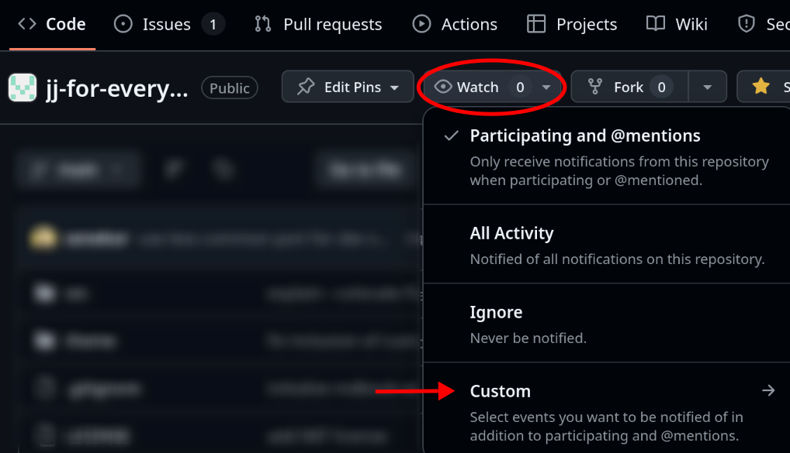

Introduction
This is a tutorial for the Jujutsu version control system. It requires no previous experience with Git or any other version control system.
At the time of writing, most Jujutsu tutorials are targeted at experienced Git users, teaching them how to transfer their existing Git skills over to Jujutsu. This tutorial is my attempt to fill the void of beginner learning material for Jujutsu. If you are already experienced with Git, I recommend Steve Klabnik's tutorial instead of this one.
This tutorial requires you to work in the terminal. Don't worry, there's a chapter covering some terminal basics in case you're not 100% comfortable with that yet. The commands I tell you to run will often only work on Unix-like operating systems like Linux and Mac. If you're stuck on Windows, consider using WSL.
What is version control and why should you use it?
I will assume you're using version control for software development, but it can be used for other things as well. For example, authoring professionally formatted documents with tools like Typst. The source of this tutorial is stored in version control too!
What these scenarios have in common is that a large body of work (mostly in the form of text) is slowly being expanded and improved over time. You don't want to lose any of it and you want to be able to go back to previous states of your work. Often, several people need to work on the project at the same time.
A general-purpose backup solution can keep a few copies of your files around. A graphical document editor can allow multiple people to edit the text simultaneously. But sometimes, you need a sharper knife. Jujutsu is the sharpest knife available.
Why Jujutsu instead of Git?
Git is by far the most commonly used VCS in the software development industry. So why not use that? Using the most popular thing has undeniable benefits. There is lots of learning material, lots of people can help you with problems, lots of other tools integrate with it etc. Why make life harder on yourself by using a lesser-known alternative?
Here's my elevator pitch:
-
Jujutsu is compatible with Git. You're not actually losing anything by using Jujutsu. You can work with it on any existing project that uses Git for version control without issues. Tools that integrate with Git mostly work just as well with Jujutsu.
-
Jujutsu is easier to learn than Git. (That is, assuming I did a decent job writing this tutorial.) Git is known for its complicated, unintuitive user interface. Jujutsu gives you all the functionality of Git with a lot less complexity. Experienced users of Git usually don't care about this, because they've paid the price of learning Git already. (I was one of these people once.) But you care!
-
Jujutsu is more powerful than Git. Despite the fact that it's easier to learn and more intuitive, it actually has loads of awesome capabilities for power users that completely leave Git in the dust. Don't worry, you don't have to use that power right away. But you can be confident that if your VCS-workflow becomes more demanding in the future, Jujutsu will have your back. This is not a watered-down "we have Git at home" for slow learners!
Learning Jujutsu instead of Git as your first VCS does have some downsides:
-
When talking about version control with peers, they will likely use Git-centric vocabulary. Jujutsu shares a lot of Git's concepts, but there are also differences. Translating between the two in conversation can add some mental overhead. (solution: convince your peers to use Jujutsu 😉)
-
Jujutsu is relatively new and doesn't cover 100% of the features of Git yet. When you do run into the rare problem where Jujutsu doesn't have an answer, you can always fall back to use Git directly, which works quite seamlessly. Still, having to use two tools instead of one is slightly annoying. I plan to teach such Git features in this tutorial in later levels. The tutorial should be a one-stop-shop for all Jujutsu users.
-
The command line interface of Jujutsu is not yet stable. That means in future versions of Jujutsu, some commands might work a little differently or be renamed. I personally don't think this should scare you away. Many people including me have used Jujutsu as a daily driver for a long time. Whenever something did change, my reaction was usually: "Great, that was one of the less-than-perfect parts of Jujutsu! Now it's even more intuitive than before!" Consider subscribing to GitHub releases of this tutorial. You will be notified if new versions of Jujutsu change something in a way that's relevant to what you learned in this tutorial.
Despite some downsides, I think the benefits are well worth it.
How to read this tutorial
Here's some information about how the tutorial is structured. Read carefully for the best experience.
Level up!
The tutorial is split into levels, which define the hierarchy in the sidebar. When you complete a level, you should probably put this tutorial away for a while and practice what you've learned. Once you're comfortable with those skills, come back for the next level.
There is one exception to this: If you're here because you need to collaborate with other people, you should complete the levels 1 and 2 right away.
Here's an overview of the available levels:
| Level | Description |
|---|---|
| 1 | The bare minimum to get started. Enough for solo-projects like submitting homework as a student. |
| 2 | The bare minimum for collaboration, e.g. students doing a group project or software engineers working in a team. |
| 3 | Important problem-solving skills: undoing mistakes, resolving merge conflicts, restoring files from history. |
More levels are planned. The following chapter explains how to get notified about new content.
Reset your progress at any time
Throughout the tutorial, you will build an example repository. Later chapters depend on the state of previous ones. But don't be afraid to mess up or lose your progress by experimenting!
There is a script which automates the task of resetting your progress to the start of any chapter.
To identify the chapter you want to continue with, the script expects a keyword as an argument. Each chapter includes its precise reset command at the top, so you can easily copy-paste it. For example, the text box below contains instructions to reset your progress to the very beginning of the tutorial:
To reset your progress to the start of this chapter, run the following command:
curl https://jj-for-everyone.github.io/reset.sh | bash -s install
This method downloads the script from the internet and executes it right away. If you have security concerns about that, you can instead:
- Download the script here.
- Read the source to make sure it's safe. It's not doing anything complicated, it just executes the commands of the tutorial in sequence.
- Run the downloaded script (with the chapter-keyword as the first argument).
For convenience, the source of the script is also included in the expandable text box below.
Source of reset script
Source of reset script
#!/usr/bin/env bash
set -euxo pipefail
red='\033[0;31m'
blue='\033[0;34m'
no_color='\033[0m' # No Color
error="${red}Error:${no_color}"
hint="${blue}Hint:${no_color}"
if [ "${1:-x}" = "x" ] ; then
set +x
printf "$error Please provide the chapter keyword as the first argument.\n"
exit 1
fi
chapter="$1"
function success() {
set +x
echo "✅ Reset script completed successfully! ✅"
exit 0
}
rm -rf ~/jj-tutorial
if [ "$chapter" = install ] ; then success ; fi
if ! command -v jj > /dev/null ; then
set +x
printf "$error Jujutsu doesn't seem to be installed.\n"
printf " Please install it and rerun the script.\n"
exit 1
fi
# make sure jj version is recent enough
detected_version="$(jj --version | cut -c 6-7)"
required_version="33"
if [ "$detected_version" -lt "$required_version" ] ; then
set +x
printf "$error Your Jujutsu version (0.$detected_version) is too outdated.\n"
printf " Please update to version 0.$required_version or later.\n"
printf "$hint If you installed Jujutsu with mise, as recommended in the installation\n"
printf " chapter, use the following commands to update:\n"
echo "
mise install-into jujutsu@latest /tmp/jj-install
mv /tmp/jj-install/jj ~/.local/bin
rm -rf /tmp/jj-install"
exit 1
fi
# Make sure user configured git.colocate = true
if [ "$(jj config get git.colocate)" != "true" ] ; then
set +x
printf "$error Your configuration of git.colocate is not set to true.\n"
printf " This will become the default in Jujutsu version 0.33, so don't worry"
printf " about having a non-standard configuration."
printf " Please run the following command:\n"
echo "
jj config set --user git.colocate true"
exit 1
fi
# Ensure existing user configuration does not affect script behavior.
tmp_config=/tmp/jj_for_everyone_reset_script_config.toml
echo "git.colocate = true" > $tmp_config
trap 'rm $tmp_config' EXIT
export JJ_CONFIG=$tmp_config
if [ "$chapter" = initialize ] ; then success ; fi
mkdir ~/jj-tutorial
jj git init ~/jj-tutorial/repo
cd ~/jj-tutorial/repo
jj config set --repo user.name "Alice"
jj config set --repo user.email "alice@local"
jj metaedit --update-author
if [ "$chapter" = log ] ; then success ; fi
if [ "$chapter" = make_changes ] ; then success ; fi
echo "# jj-tutorial" > README.md
jj log -r 'none()' # trigger snapshot
if [ "$chapter" = commit ] ; then success ; fi
jj commit --message "Add readme with project title
It's common practice for software projects to include a file called
README.md in the root directory of their source code repository. As the
file extension indicates, the content is usually written in markdown,
where the title of the document is written on the first line with a
prefixed \`#\` symbol.
"
if [ "$chapter" = remote ] ; then success ; fi
git init --bare ~/jj-tutorial/remote
jj git remote add origin ~/jj-tutorial/remote
jj bookmark create main --revision @-
jj git push --bookmark main --allow-new
if [ "$chapter" = update_bookmark ] ; then success ; fi
printf "\nThis is a toy repository for learning Jujutsu.\n" >> README.md
jj commit -m "Add project description to readme"
jj bookmark move main --to @-
jj git push
if [ "$chapter" = clone ] ; then success ; fi
cd ~
rm -rf ~/jj-tutorial/repo
jj git clone ~/jj-tutorial/remote ~/jj-tutorial/repo
cd ~/jj-tutorial/repo
jj config set --repo user.name "Alice"
jj config set --repo user.email "alice@local"
jj metaedit --update-author
if [ "$chapter" = github ] ; then success ; fi
if [ "$chapter" = branch ] ; then success ; fi
echo "print('Hello, world!')" > hello.py
jj commit -m "Add Python script for greeting the world
Printing the text \"Hello, world!\" is a classic exercise in introductory
programming courses. It's easy to complete in basically any language and
makes students feel accomplished and curious for more at the same time."
jj git clone ~/jj-tutorial/remote ~/jj-tutorial/repo-bob
cd ~/jj-tutorial/repo-bob
jj config set --repo user.name Bob
jj config set --repo user.email bob@local
jj metaedit --update-author
echo "# jj-tutorial
The file hello.py contains a script that greets the world.
It can be executed with the command 'python hello.py'.
Programming is fun!" > README.md
jj commit -m "Document hello.py in README.md
The file hello.py doesn't exist yet, because Alice is working on that.
Once our changes are combined, this documentation will be accurate."
jj bookmark move main --to @-
jj git push
cd ~/jj-tutorial/repo
jj bookmark move main --to @-
jj git fetch
if [ "$chapter" = show ] ; then success ; fi
if [ "$chapter" = merge ] ; then success ; fi
jj new main@origin @-
jj commit -m "Merge code and documentation for hello-world"
jj bookmark move main --to @-
jj git push
if [ "$chapter" = ignore ] ; then success ; fi
cd ~/jj-tutorial/repo-bob
tar czf submission_alice_bob.tar.gz README.md
echo "
## Submission
Run the following command to create the submission tarball:
~~~sh
tar czf submission_alice_bob.tar.gz [FILE...]
~~~" >> README.md
echo "*.tar.gz" > .gitignore
jj file untrack submission_alice_bob.tar.gz
jj commit -m "Add submission instructions"
if [ "$chapter" = rebase ] ; then success ; fi
jj bookmark move main --to @-
jj git fetch
jj rebase --destination main@origin
jj git push
if [ "$chapter" = more_bookmark ] ; then success ; fi
cd ~/jj-tutorial/repo
echo "for (i = 0; i < 10; i = i + 1):
print('Hello, world!')" > hello.py
jj commit -m "WIP: Add for loop (need to fix syntax)"
jj git push --change @-
if [ "$chapter" = navigate ] ; then success ; fi
jj git fetch
jj new main
jj new 'description("Document hello.py in README.md")'
jj new main
if [ "$chapter" = undo ] ; then success ; fi
echo "print('Hallo, Welt!')" >> hello.py
echo "print('Bonjour, le monde!')" >> hello.py
jj commit -m "code improvements"
jj undo
jj commit -m "Print German and French greetings as well"
jj undo
jj undo
jj undo
jj redo
jj redo
jj redo
if [ "$chapter" = track ] ; then success ; fi
cd ~ # move out of the directory we're about to delete
rm -rf ~/jj-tutorial/repo
jj git clone ~/jj-tutorial/remote ~/jj-tutorial/repo
cd ~/jj-tutorial/repo
# roleplay as Alice
jj config set --repo user.name "Alice"
jj config set --repo user.email "alice@local"
jj metaedit --update-author
echo "print('Hallo, Welt!')" >> hello.py
echo "print('Bonjour, le monde!')" >> hello.py
jj commit -m "Print German and French greetings as well"
jj bookmark move main -t @-
jj git push
jj bookmark track 'glob:push-*@origin'
if [ "$chapter" = conflict ] ; then success ; fi
jj new 'description("WIP: Add for loop")'
echo "for _ in range(10):
print('Hello, world!')" > hello.py
jj commit -m "Fix loop syntax"
jj new main @-
echo "for _ in range(10):
print('Hello, world!')
print('Hallo, Welt!')
print('Bonjour, le monde!')" > hello.py
jj commit -m "Merge repetition and translation of greeting"
jj bookmark move main --to @-
jj git push
if [ "$chapter" = abandon ] ; then success ; fi
jj commit -m "Experiment: Migrate to shiny new framework"
jj git push --change @-
jj new main
jj commit -m "Experiment: Improve scalability using microservices"
jj git push --change @-
jj new main
jj commit -m "Experiment: Apply SOLID design patterns"
jj git push --change @-
jj new main
jj abandon 'description("Experiment")'
jj git push --deleted
if [ "$chapter" = restore ] ; then success ; fi
rm README.md
jj show &> /dev/null
jj restore README.md
jj restore --from 'description("Fix loop syntax")' hello.py
jj commit -m "Remove translations"
jj bookmark move main --to @-
jj git push
if [ "$chapter" = complete ] ; then success ; fi
set +x
echo "Error: Didn't recognize the chapter keyword: '$chapter'."
exit 1
Stay up to date
Both this tutorial and Jujutsu are still evolving. In order to keep your Jujutsu knowledge up-to-date, subscribe to releases of the tutorial's GitHub repo. You'll get an email from GitHub whenever I post a release, which basically allows me to send you notifications.
I'm planning to post releases for two reasons in particular:
- I finished writing a new level.
- A new version of Jujutsu includes changes that are relevant to readers of this tutorial.
To subscribe: Visit the GitHub repo, click on "Watch", then "Custom" and lastly select "Releases".

The following levels are planned for the future:
| Level | Description |
|---|---|
| 4 | History rewriting skills. These will allow you to iterate toward a polished version history, which pays dividends long-term. Some projects require you to have these skills in order to meet their quality standards. |
| 5 | Productivity boosters, advanced workflows, lesser-known CLI functions and a little VCS theory. Completing this level means you have mastered Jujutsu. |
| 6 | Additional topics that only come up in specific situations: tags, submodules, workspaces etc. Consider skimming the list of topics and come back once you have an actual need for it. |
I consider the tutorial up-to-date with Jujutsu version 0.33, which was released in September 2025. If that's more than a couple months in the past, I probably stopped updating this tutorial.
Help make this tutorial better
If you find a typo, you can suggest a fix directly by clicking on the "edit" icon in the top-right corner. If you have general suggestions for improvement, please open an issue. I am also very interested in experience reports, for example:
- Do you have any frustrations with Jujutsu which the tutorial did not help you overcome?
- Was there a section that wasn't explained clearly? (If you didn't understand something, it's probably the tutorial's fault, not yours!)
- Did you complete a level but didn't feel like you had the skills that were promised in the level overview?
- Is there something missing that's not being taught but should?
- Do you feel like the content could be structured better?
Thank you for helping me improve this tutorial!
Terminal basics
This chapter is not about Jujutsu or even version control. But the tutorial requires you to work in the terminal, so let's cover the basics. If you're already comfortable in the terminal, you can confidently skip this chapter.
There are a lot of small things to cover, so here's a little table of contents:
- What is the terminal?
- The prompt
- Entering commands
- The current working directory
- Copy-pasting commands
- Redirection
- Pagers
- Variables and the environment
- The
PATHvariable - Startup scripts
What is the terminal?
The terminal is an application that lets you enter commands to the operating system in the form of text. The commands usually produce text themselves, which will be displayed to you.
The terminal used to be the primary way people interact with a computer. That was before the time of graphical user interfaces. Today, the terminal works much the same as it did in the past, but it's inside a normal app window now. The app can have different names, but "Terminal" and "Console" or variations thereof are most common.
The prompt
When you start the terminal, the initial text you will see is called the prompt. Whenever a command finishes running, the prompt will be shown again. That's your sign that you can start entering your next command. Here's an example of what a prompt can look like:
[username@hostname ~]$
This shows some information that'll be useful later, but don't worry about it for now.
The prompt usually ends with a dollar $ or percent % sign, so you can easily recognize it.
The dollar sign is often used as a short representation of the prompt.
Entering commands
Being presented with the prompt is our cue to execute commands, so let's do that. Type the following and then press Enter:
echo Hello, terminal!
The terminal will split your commands into words based on whitespace. The above command has three words:
echoHello,terminal!
The first word is the program to run.
The terminal will find a program called echo on your computer and run it with the two arguments Hello, and terminal!.
The program is free to interpret these arguments however it wants.
The program called echo happens to simply print its arguments back to the terminal:
$ echo Hello, terminal!
Hello, terminal!
The current working directory
One deeply fundamental concept of the terminal is the current working directory. It's a location in your filesystem, the one "where you currently are".
Most commands you run behave differently based on this "current location".
Because of that, we need to be able to change it.
The command to do that is called cd, short for "change directory".
You probably have a folder called "Downloads", but you can substitute a different one in this example:
[username@hostname ~]$ cd Downloads
[username@hostname Downloads]$
Oh! Did you notice that the prompt changed? The current working directory, or CWD for short, is so important that it's usually shown somewhere in the prompt. That way you always know "where you are".
Before running cd in the example above, the CWD was apparently the tilde ~ character.
That's a shorthand for your user's home directory.
On Linux, that's /home/username.
Another way to determine your CWD is to call the command pwd, short for "print working directory".
It expands the shorthand tilde ~ character to its full path.
[username@hostname Downloads]$ pwd
/home/username/Downloads
[username@hostname Downloads]$
One example of a CWD-aware command is ls, which lists files and directories.
Go ahead and run ls in your Downloads folder.
Maybe it's time to clean it up a little...?
The important lesson to take away here is: Be aware of your current working directory. If a command doesn't do what you want, you might just be in the wrong place.
Copy-pasting commands
This tutorial contains many code blocks that contain commands for you to copy-paste into your terminal. Multiple commands can be on separate lines and you can copy-paste them all at once without issues. If you hover your mouse over the top-right corner of a code block, a hidden copy-button will appear. Very useful!
For historical reasons, Ctrl+C and Ctrl+V don't do copy and paste in the terminal. Instead, you need to use Ctrl+Shift+C/V respectively. If you're using a Mac, Command+C/V works normally.
If you forget about this and type Ctrl+V without Shift in an attempt to paste a command into the terminal, it will actually get messed up a little. You can't just try again with Ctrl+Shift+V. You would end up with something like this:
$ ^[[200~echo Hello, terminal!~
These weird characters are an "escape sequence" caused by typing Ctrl+V without Shift. This command will not work. So, if you make the mistake of forgetting Shift, just hit Enter a couple of times until you get a fresh prompt, then try again.
Some of the commands will contain comments, which are lines of text following a pound # character.
The terminal simply ignores them.
They are used to make commands more understandable to human readers, but they don't affect the command execution.
You can practice by copy-pasting the following command into your terminal:
# Here are some example comments:
#
# This is the program being run.
# |
# | This is the start of the first argument.
# | |
# | | This is the start of the second argument.
# v v v
echo Hello, terminal! # Placing a comment next to a command is also allowed.
Redirection
We've seen how the echo command prints its arguments back to the terminal.
But that's just the default.
echo just prints to something called "standard out", or "stdout".
That is usually connected to your terminal.
But you can also redirect the stdout of a program, for example to a file with the > operator.
An example looks like this:
echo "bread, onions, tea" > groceries.txt
In this book, I will often tell you to manipulate a file by running a command that looks like the one above.
The > operator overwrites a file, but there is also the >> operator, which appends to the end of a file.
Pagers
Some commands you run in the terminal print a lot of text. It can be tedious to scroll all the way back up to the point where the command output started. This is where a pager can help. It takes the output from another program shows it to you from the beginning.
Some programs will display their output in a pager automatically, because they know they will be printing a lot of text. Jujutsu also does that sometimes. Given that you may "accidentally" end up in a pager, you need to know that you can exit a pager by typing q!
If the output of Jujutsu is displayed in a pager, the bottom left corner will be a colon : character and your prompt won't be shown.
One way you can experiment with using a pager is by running man tar, which opens the manual page for the tar command.
Various key bindings let you navigate in the pager. The arrow keys, "page up" and "page down" all work as expected. Another super useful one is this: Typing / allows you to enter a search term, then Enter starts the search. Step through the search hits with (lowercase) n and step backwards with (uppercase) N.
Variables and the environment
Running programs on your computer by typing their name is only scratching the surface of what the terminal can do.
It actually has a whole little programming / scripting language built-in.
For example, you can store values in variables with the equal = sign and evaluate them with the dollar $ sign:
$ my_name=Alice
$ echo Hello, $my_name!
Hello, Alice!
Normal variables like above cannot be read by programs you run. They are only for your own use in the current terminal session. However, variables can be exported into the environment, which makes them accessible for programs to read. This is an alternative way to tell programs what you want them to do. The more common way is with arguments on the command line, but exported variables are useful in some situations.
You can export a variable separately from setting its value or do it all in one line:
MY_NAME=Alice
export MY_NAME
export MY_NAME=Alice
Such exported variables are usually referred to as environment variables. They are not required to be uppercase, but it's a strong convention. It makes it easy to know which variables can be read by other programs.
The PATH variable
One environment variable that can be difficult to understand at first is the PATH variable.
First, let's print it to see what it contains:
$ echo $PATH
/home/username/.local/bin:/usr/local/bin:/usr/bin
Your output may well look different, but the structure is the same:
It's a list of filesystem paths separated by the colon : character.
In this case, there are three paths:
/home/username/.local/bin/usr/local/bin/usr/bin
What do these three paths mean?
They are the places where your terminal searches for programs to run!
Let's mess with it to see what happens.
Set the PATH variable to the empty string:
export PATH=""
Now try to run a program, like ls for example:
$ ls
bash: ls: No such file or directory
Oops.
Setting the PATH variable to the empty string tells the terminal to not search for programs anywhere.
Therefore, the programs ls cannot be found anymore.
We could fix this by copy-pasting the previous value of PATH and export that again.
But if you mess up the value of an environment variable for real, you often don't know what the previous, correct value was.
So it's easiest to just close the terminal window and open a new one.
All variables will be reset to their default.
So, if modifying the PATH variable can break your session, should you just never touch it?
Not quite.
Sometimes you want (or need) to install programs in a different location than where your terminal searches for them by default.
In that case, you need to extend the list of paths stored in the PATH variable.
Here's an example:
export PATH="/home/username/my-local-programs:$PATH"
This starts with a new path at the front of the list, then there's the colon : separator and lastly the rest of the list, which is the previous value stored in PATH.
Startup scripts
The above command to edit the PATH variable will only affect the current terminal session.
So, if you close the terminal and reopen a new window, the value of PATH will be reset to its default.
But that may not be desirable.
If you install programs into a custom location, you may want all your future terminal sessions to find those programs automatically.
That's where startup scripts come into play. They are files containing a list of commands (also known as scripts). Startup scripts are automatically executed whenever you open a new terminal, before you can even type the first command. So that's the perfect place to make permanent changes to all your future terminal sessions!
The location and name of your startup script depend on your shell, i.e. your specific "flavor" of terminal.
The terminal is pretty standardized, so we mostly don't need to worry about different shells.
This is an exception.
If you're using Linux, your shell is probably called bash.
If you're using Mac, your shell is probably called zsh.
To find out for sure, you can read the SHELL environment variable:
$ echo $SHELL
/bin/bash
If your shell is bash, you should add your custom startup commands to the file ~/.bashrc.
In the case of zsh, the startup script is ~/.zshrc.
For now, print the content of your startup script. It's probably complicated, so don't try to understand it all. Nevertheless, taking a look is a great way to get acquainted with the terminal:
# for bash
cat ~/.bashrc
# for zsh
cat ~/.zshrc
If most of this stuff was news to you, pat yourself on the back! You've already learned a lot. This should be enough knowledge about the terminal to get you through the tutorial.
Don't hesitate to come back here and revise from time to time. The rules of the terminal are not the most intuitive, so it can take a couple attempts for them to settle in.
Level 1
This level will provide you with the bare minimum of skills you need to get work done. It's only enough for the simplest use cases and you're working on your own. For example, students who track and submit their homework with a Git repository won't need more than this.
The following "cheat sheet" contains the most important commands from level 1. Use it to prime your brain before getting started and remind yourself later when you forget something.
Configure your authorship information
jj config set --user user.name "Alice"
jj config set --user user.email "alice@local"
Initialize a repository
jj git init <DESTINATION>
Clone an existing repository
jj git clone <PATH_OR_URL> <DESTINATION>
Commit the changes you made
jj commit
Push your latest commit to the "main" bookmark
jj bookmark move main --to @-
jj git push
Installation and setup
There are many ways to install Jujutsu and the best one depends on your system. If you don't care at all about how Jujutsu is installed, you can copy-paste these commands:
curl https://mise.run | sh
~/.local/bin/mise install-into jujutsu@latest /tmp/jj-install
mv /tmp/jj-install/jj ~/.local/bin
rm -rf /tmp/jj-install
exec $SHELL --login
Now run jj --version to verify the installation.
It should print the currently installed version of Jujutsu, something like jj 0.33.0-blabla.
If the output is an error instead, e.g. bash: jj: command not found..., open the text box below.
jj: command not found...
jj: command not found...
Your system probably doesn't add the installation directory ~/.local/bin to the PATH environment variable.
To fix that, you first need to figure out what shell you're using:
echo $SHELL
The output should end with either "bash", or "zsh".
That's your shell.
Next, put a command adding ~/.local/bin to your PATH variable into your shell's startup script:
# for bash:
echo 'export PATH=$HOME/.local/bin:$PATH' >> ~/.bashrc
# for zsh:
echo 'export PATH=$HOME/.local/bin:$PATH' >> ~/.zshrc
Lastly, close the terminal and open a new one so the changes take effect.
Explanation of installation commands
Explanation of installation commands
Installing software is more difficult than one might think.
It depends on many factors like CPU architecture and operating system.
That's why there's not a single, easy command we can run to install Jujutsu on any system.
Instead, we first install another program that specializes in installing software called mise.
(You can read more about mise on its website.)
The first command curl https://mise.run | sh downloads and runs a script from the internet that installs mise for you.
This is kind of dangerous and you should be careful when executing scripts from the internet.
People could place malicious commands in the script you're downloading.
But it's a convenient technique if you trust the owner of the website you're loading the script from.
The second command runs mise to download Jujutsu into a temporary directory.
We have to specify the full path to the mise binary (~/.local/bin/mise), because at this point we don't know if ~/.local/bin is included in your PATH variable.
(See the "Terminal basics" chapter for an explanation of that.)
mise takes care of downloading the right binary for your operating system and CPU architecture.
The following command moves the downloaded binary to ~/.local/bin, which is the customary place for user-local programs.
rm -rf /tmp/jj-install ("remove recursive force") deletes the temporary download directory and its content.
Lastly, exec $SHELL --login restarts your shell, which causes its startup scripts to run again.
Some Linux distributions like Ubuntu only add ~/.local/bin to the PATH variable if that directory exists when the terminal is started.
So, restarting the terminal after installing Jujutsu is a simple way to make sure the system will find the new program.
Maybe there are distributions which don't add ~/.local/bin to PATH at all, which would mean those commands don't work on such a system.
I'm not aware of such distributions.
(Please open an issue if you know of a relevant one!)
You can fix such an issue for yourself by extending the PATH variable in your shell startup script.
Other installation methods
Other installation methods
The official installation instructions for several different platforms are here. I will mention a few methods that I consider important as well.
If you use cargo-binstall, this works great:
cargo-binstall jj-cli
If you're a Mac & Homebrew user, this one's for you:
brew install jj
If you have the Rust toolchain installed and would like to compile from source, you can run:
cargo install --locked --bin jj jj-cli
You can also download a binary directly from Jujutsu's release page. Scroll down to "Assets", there is a list of archives to download. The right one depends on two things: your operating system and your CPU architecture. Look for the strings matching your system in the names of the archives.
How to identify your operating system:
| operating system | string to look for |
|---|---|
| Linux | unknown-linux-musl |
| Mac | apple-darwin |
| Windows | pc-windows-msvc |
How to identify your CPU architecture:
| CPU brand | string to look for |
|---|---|
| Intel | x86_64 |
| AMD | x86_64 |
| Apple | aarch64 |
| ARM | aarch64 |
| Qualcom (Snapdragon) | aarch64 |
Once you have downloaded the right archive, you need to extract it.
You should be able to right-click on the downloaded archive in your file explorer and select "extract" or something similar in the drop-down.
The extracted folder will contain documentation and a file called "jj".
You need to move that into the directory ~/.local/bin/.
(Or another location where you keep your programs if you know what you're doing.)
Initial configuration
Jujutsu is very configurable, but we don't care about most knobs and dials right now. The only thing that you must configure is your name and email. This is required metadata and some things won't work right without this information. However, you don't have to enter your real name and email, in case you're not comfortable storing that information in the repositories you're planning to work on.
If you're working on school or work projects, it's probably fine to configure your real name and school / work email. These repositories are usually not publicly accessible.
If you're planning to work on open source projects that anyone can see, you may want to be more careful. You could use your GitHub handle as username, but many are comfortable using their real name too. The email address is more important. If you use your normal, private email address, there is a risk of receiving undesirable emails at that address. You might consider using a dedicated address just for open source work. Another alternative is to use an address provided by GitHub. It identifies your GitHub account, but you cannot receive emails through it. Go to GitHub's email settings and select "Keep my email address private", your private email address will then be shown at the top.
Here are the commands to configure your username and email:
jj config set --user user.name "Anonymous"
jj config set --user user.email "anon@local"
If you want shell completions, follow the instructions here. If you don't know what a "shell completion" is, don't worry, it's not important.
Jujutsu can create repositories in two slightly different flavors: "colocated" and "non-colocated". For newcomers like you, the "colocated" flavor is the better choice. Run the following command to configure it as the default:
jj config set --user git.colocate true
I won't explain the difference, it doesn't matter to you. Colocated repos will become the default in Jujutsu version 0.34 anyway, at which point I can just remove this info box.
Installing a simple text editor
Jujutsu will sometimes ask you to edit a text file.
The default text editor used for that purpose is nano on Linux and Mac.
It works fine, but it can be counter-intuitive for new users.
(Ctrl+O is saving the file and Ctrl+X is closing the program.)
This is optional, but I recommend you install a text editor called edit.
I consider it to be the simplest and most intuitive alternative.
If you installed Jujutsu with mise (as suggested above) you can also install edit the same way:
mise install-into edit@latest /tmp/edit-install
mv /tmp/edit-install/edit ~/.local/bin
rm -rf /tmp/edit-install
If you installed Jujutsu using another method, you'll want to install edit on your own as well.
Next, we need to configure Jujutsu to use edit when opening a text file:
jj config set --user ui.editor edit
From now on, when Jujutsu opens a text file for you, it will do so using edit.
When you're done editing a file, click on "File", then "Exit", in the menu bar or press Ctrl+Q to exit the text editor.
It will ask you if you want to save the file, which you confirm by pressing Enter.
That's it!
I will remind you how it works the first time we need it.
Initializing a repository
Reset your progress
Reset your progress
To reset your progress to the start of this chapter, run the following command:
curl https://jj-for-everyone.github.io/reset.sh | bash -s initialize
A "repository" is a directory (folder) where Jujutsu keeps track of all files, including the ones in subdirectories.
A repository usually corresponds to a project, so the version history of unrelated projects are not tied to each other.
In this tutorial, we'll use ~/jj-tutorial/repo as the location of our repository.
Don't put it somewhere else, otherwise some commands I tell you to run won't work later.
(If you don't like the clutter in your home directory, you can always delete it and use the reset script when you continue with the tutorial.)
The command to initialize a new repository is jj git init <DESTINATION>.
We use cd to change our working directory to the new repository.
Copy-paste these commands into your terminal:
mkdir ~/jj-tutorial
jj git init ~/jj-tutorial/repo
cd ~/jj-tutorial/repo
Let's examine our first jj command.
git is the subcommand responsible for various Git-specific compatibility features.
One of them is the init command, which initializes a new repository that's compatible with Git.
What does "initializing a repository" mean?
Essentially, Jujutsu creates two directories .git and .jj.
These contain all information about the version history.
Why two directories?
The .git directory contains all the important stuff, stored in a way that is compatible with Git.
The .jj directory contains additional metadata which enable some of Jujutsu's advanced features.
You should never manipulate files in these directories directly! Their content is a well-structured database. If you corrupt the database format, the repository might become broken. We'll talk about a second layer of backup in the chapter about remotes.
Files and directories starting with a dot are hidden by default, but you can verify they were created with ls -a:
$ ls -a
.git .jj
In the previous chapter, you configured Jujutsu with your name and email address. This configuration applies to all of your repositories by default. However, for our example repository, we'll actually pretend to be "Alice", who is later joined by "Bob" to simulate collaboration. The below commands perform the author configuration only for this specific repo. There's no need to memorize these commands, they are normally not needed.
# applies configuration to a single repository only
# vvvvvv
jj config set --repo user.name "Alice"
jj config set --repo user.email "alice@local"
# reset already recorded global authorship information:
jj metaedit --update-author
Inspecting the state of a repository
Reset your progress
Reset your progress
To reset your progress to the start of this chapter, run the following command:
curl https://jj-for-everyone.github.io/reset.sh | bash -s log
cd ~/jj-tutorial/repo
So, now we've got an empty repository.
Let's take a closer look at it.
The command jj log shows you a visual representation of your version history.
If you run it, you should see something like this:
@ mkmqlnox alice@local 2025-07-22 20:15:56 f6feaadf │ (empty) (no description set) ◆ zzzzzzzz root() 00000000
There's a lot going on already, so let's unpack it one-by-one.
In the leftmost column, there's an @, a line and a diamond.
The @ sign represents the present state of the files in the repository, also known as the "working copy".
The diamond indicates an earlier state and the line connecting them means one state descends from another.
Older states are at the bottom and more recent ones are at the top.
In this case, the diamond is the "root", an empty state from which all others descend.
It always exists and cannot be modified.
Allow me to introduce a little bit of VCS-lingo.
Until now, I've used the word "state" to refer to the "working copy" (@ sign) and the "root" (diamond).
These states are snapshots of your repository, storing all files in the repo and their content.
The technical term for these snapshots is commit.
The commit is the most important data structure in the repository and I will use that term from now on.
So what's going on to the right of the first column? That's all important metadata about your commits. Let's look at the one of the working copy commit:
mkmqlnox alice@local 2025-07-22 20:15:56 f6feaadf (empty) (no description set)
The first word is mkmqlnox, a random-looking identification number called the change ID.
Next is the email address you previously configured, indicating that you are the author of this commit.
After that is a timestamp, indicating when the commit was created.
Last on the first line is another random looking word f6feaadf.
It's also an identification number, but this one is called the commit hash or commit ID.
The change ID is more important than the commit hash, which is reflected in their position in the log output: the important one comes first.
We'll discuss the purpose of these IDs in more detail later.
Note that in the example output I provide in this tutorial, the change IDs and timestamps are not always consistent. While writing the tutorial, I go back and forth, changing stuff and recreating my example repository. This causes change IDs and timestamps to change.
On the second line, the word "(empty)" indicates that none of the files in this commit were changed compared to the previous commit. Lastly, "(no description set)" is self-explanatory and foreshadows the possibility of giving descriptions to commits.
Even though the repository is empty at this point, we already get a decent understanding of what a repository is. It consist of a set of commits which are related to each other, where one commit is said to be the parent or the child of another. These commits store snapshots of the state of your files, as well as relevant metadata like authorship, timestamp and description.
Getting help about using Jujutsu
We've now used two of Jujutsu's commands: jj git init and jj log.
There are a lot of commands and flags to modify their behavior.
I will introduce everything you need, but sometimes you may need to refresh your mind.
It can also just be valuable to explore on your own.
You can pass the --help flag to any command to view contextual documentation.
For example, jj --help will show you the full list of top-level commands that Jujutsu supports.
jj log --help will show you specific information about how to use the log command, i.e. how to modify its behavior according to your needs.
These help pages will feel overwhelming at first. But something always sticks, even if you don't notice at first. If you keep coming back, you will soon become very efficient at finding relevant information this way.
Making changes
Reset your progress
Reset your progress
To reset your progress to the start of this chapter, run the following command:
curl https://jj-for-everyone.github.io/reset.sh | bash -s make_changes
cd ~/jj-tutorial/repo
Your primary goal is always to work on a project, Jujutsu just helps you manage your work. So let's pretend we're doing some actual work by putting stuff in a file:
echo "# jj-tutorial" > README.md
When you change files in a directory tracked by Jujutsu, what you're conceptually doing is modifying the working copy commit.
Let's see what jj log has to say now:
@ mkmqlnox alice@local 2025-07-22 20:19:25 e21958c2 │ (no description set) ◆ zzzzzzzz root() 00000000
A couple of things have changed:
- The timestamp of the commit was updated.
- The commit hash changed. That's one of the reasons the commit hash is less interesting, it changes every time anything else in the commit changes.
- The commit is not "(empty)" anymore!
The last point means that our new file was successfully recorded in the working copy commit.
Creating a new commit
Reset your progress
Reset your progress
To reset your progress to the start of this chapter, run the following command:
curl https://jj-for-everyone.github.io/reset.sh | bash -s commit
cd ~/jj-tutorial/repo
Once we are done with a set of changes, we should create a new commit. If we don't do that, the next changes we make will be recorded into the same commit as the previous ones. That would make it harder to understand the evolution of a project later.
Before we create a new commit, we also need to give a description to the one we've been working on so far. Every commit needs to have a description, even if it's a short one.
So, there are conceptually two things we need to do now:
- Give a description to the changes we just finished making, the ones that were recorded in the existing working-copy (
@) commit. - Start working on a completely new commit, which is the child of the one we just finished.
A source of confusion if you know Git
A source of confusion if you know Git
This tutorial assumes that you have no experience with Git.
However, if you have used Git before, it might actually be more difficult for you to understand this.
The reason is that both Git and Jujutsu have a subcommand called commit, but they work differently.
In Git, changes you make are not recorded automatically into commits.
Instead, they exist outside of any commit, until you add them to one manually.
The command git commit creates a commit containing the new changes as well as the new commit message.
In Jujutsu, there is always a commit already and any changes you make are automatically recorded into it.
So, the description you type during jj commit will be applied to a commit that has already existed for some time.
The new commit that's being created is completely empty and has no description.
It's ready for auto-recording of the upcoming changes you will be making.
The command to complete both oft these tasks at once is:
jj commit
This will open a text editor so you can write a description for the commit.
If you followed my instructions during installation and setup, the text editor will be edit.
When you're done writing the description, click on "File", then "Exit", in the menu bar or press Ctrl+Q to exit the text editor.
Confirm that you want to save the file by pressing Enter.
You may notice that the text file doesn't start empty. It already contains a few lines:
JJ: This commit contains the following changes:
JJ: A README.md
JJ:
JJ: Lines starting with "JJ:" (like this one) will be removed.
These lines starting with JJ: are comments, similar to lines starting with a pound # in the terminal.
They will not be part of the final commit description, so you don't need to delete them.
Jujutsu uses these comments to remind you which files you modified when working on this commit.
That can be helpful inspiration for a good commit description.
Here's an example description you could type (or copy-paste) into the text editor:
Add readme with project title
It's common practice for software projects to include a file called
README.md in the root directory of their source code repository. As the
file extension indicates, the content is usually written in markdown,
where the title of the document is written on the first line with a
prefixed `#` symbol.
There is a little bit of structure here that you should follow. The first line of the description is called the subject. Sometimes the subject line is all you need, but to describe your changes in more detail, you can follow it up with a body. Subject and body are separated by an empty line. Both of them should not exceed 72 characters per line.
Commit messages are important, because they make it easier for you and others to understand the changes and their motivation later on. This importance lies on a spectrum: The more people work on a project and the longer-lived it is, the more important good commit messages become. For example, the Linux kernel is a multi-decade project with thousands of people working on it together. Linux developers put a lot of thought and effort into good commit messages. On the other extreme of the spectrum may be a student's repository for storing the homework of a single lecture. The project is over within a couple of months and there is little chance of the student ever digging into the history, let alone anyone else. That student probably won't invest much time into good commit messages.
More tips for good commit messages
More tips for good commit messages
Here are some additional conventions that are good practice for any type of project.
Try to keep the subject line below 50 characters
While 72 characters is the hard limit, the subject line usually benefits from being as concise as possible.
It is shown in many places where space is scarce and people want to get a general idea of your changes without reading too much.
If you find yourself exceeding 50 characters regularly, you may be combining multiple unrelated changes into a single commit.
If you put unrelated changes into separate commits, finding concise subject lines becomes easier.
However, there are often situations where 50 characters is just too restrictive, so don't worry about going above when necessary.
Use imperative mood in the subject line
A common instinct when writing commit messages it to describe what you did in the past tense, e.g. "Fixed bugs and improved code".
Another one is to describe the content of the commit, e.g. "bug fixes and code improvements".
Instead, write the subject line as if giving a command or instruction, e.g. "Fix bugs and improve code".
A simple rule of thumb is that the subject should complete the sentence "If applied, this commit will...".
The resulting history will be more natural to read.
Note that this primarily applies to the subject, the style of the body can be more flexible.
Put yourself in the shoes of the reader
The target audience for your commit messages are future readers of the project history.
They are trying to understand what your changes did and why.
They can always read the content changes directly for how they did that, so the ideal commit message should complement that.
Great candidates include information that's not present in the content itself as well as guidance to understand the changes more quickly.
Let's see the result of running jj commit with jj log:
@ pwpuwyto alice@local 2025-07-22 20:22:36 35de496a │ (empty) (no description set) ○ mkmqlnox alice@local 2025-07-22 20:20:34 git_head() 5b79353a │ Add readme with project title ◆ zzzzzzzz root() 00000000
There are a few things to observe here:
- The new commit is a child of our previous working copy commit.
- The previous commit shows the subject line of the description we gave it.
- The new commit became our working copy, meaning any further file changes will be recorded into the new commit.
- The previous commit is marked with
git_head(). This marker is not important and you can ignore it. - The previous commit has a different symbol (circle
○) than the root commit (diamond◆). This is related to an important feature, which we'll learn about later.
We now have the tools for the most basic version control workflow:
- make some changes
- create a new commit
Repeating these two steps is what you'll do the most, when working on a version-controlled project.
Sending commits to a remote
Reset your progress
Reset your progress
To reset your progress to the start of this chapter, run the following command:
curl https://jj-for-everyone.github.io/reset.sh | bash -s remote
cd ~/jj-tutorial/repo
We now have a commit which we don't want to lose.
The way we're using Jujutsu right now, we don't have a backup at all.
What would happen if we delete the ~/jj-tutorial/repo directory on disk?
The .git and .jj subdirectories would be deleted as well.
Since our entire version control database is stored in there, we wouldn't be able to recover any of our work!
We can fix that by duplicating our commit at another location, a so-called remote. Besides providing a backup, sending commits to a remote also allows you to share your work more easily for collaboration.
The most popular form of a remote is to host a repository with an online service like GitHub. That requires an account and a little setup though, so we'll use a simpler approach in this tutorial. Your remote will be stored in a new directory on your computer, at a different location than your primary repository. That style of remote is bad as a backup and bad for collaboration, but it's perfect for learning how remotes work. There are a few practical tips about using GitHub in a later chapter.
Initializing the remote
The following command will initialize a new repository for use as a remote:
git init --bare ~/jj-tutorial/remote # initialize "remote" ("bare") repository
Since you will likely use a different style of remote for real projects, you don't need to understand the details here. If you're curious anyway, expand the text box below.
The difference between remote (bare) and regular repositories
The difference between remote (bare) and regular repositories
git init --bare is very similar to jj git init, which we used to create our main repository.
However, instead of a "normal" repository, it creates a "bare" one.
But what's the difference?
Think of a regular repository as consisting of two parts: (1) Jujutsu's internal database stored in the .git and .jj directories and (2) all the actual files of your project, which you can modify - your working copy.
The term "copy" is key here, because all the files are also stored in the internal database.
The only reason a copy of the files exists outside the database is so you can read and modify them - "work" with them.
So, "working copy" is a fitting name indeed.
A bare repository is a regular repository without a working copy. Since we will only use the remote repository for sending and receiving commits, we don't need a working copy.
If you inspect the content of the new bare repository, it will look very similar in structure to the content of the .git directory in our main repository:
ls -lah ~/jj-tutorial/repo/.git
ls -lah ~/jj-tutorial/remote
Connecting to a remote
A repository is connected to a remote by storing its location under a specific name. Remotes can be called anything, but when there is only one, the convention is to call it origin:
jj git remote add origin ~/jj-tutorial/remote
Here we connect to the remote by specifying its path on our filesystem.
When using a repository hosted on GitHub or similar services, the path is replaced with a URL.
More on that later.
If everything went well, origin should now appear in the list of remotes:
jj git remote list
Adding a bookmark
There is one last speed bump before we can send our work to the remote. Remote repositories can receive a lot of commits, not all of which end up being needed in the long run. Therefore, it's desirable that commits which aren't needed anymore can be deleted automatically. How does the remote know which commits to delete and which to keep? With bookmarks!
A bookmark is a simple named label that's attached to a commit. Every commit with such a bookmark label is considered important and won't be deleted automatically. Because of that mechanism, a bookmark is required for sending commits to a remote.
Let's create a bookmark called main and point it to our completed commit. The name "main" is a convention that represents the primary state of the project. In legacy projects, the name "master" is also still in widespread use.
jj bookmark create main --revision mkmqlnox # <- substitute your change ID here
The command jj bookmark create expects a name (main) and a commit to which the bookmark should point.
We identify the commit by its change ID (--revision mkmqlnox).
The flag --revision can also be abbreviated as -r.
Let's check the result with jj log:
@ pwpuwyto alice@local 2025-07-22 20:22:36 35de496a │ (empty) (no description set) ○ mkmqlnox alice@local 2025-07-22 20:20:34 main git_head() 5b79353a │ Add readme with project title ◆ zzzzzzzz root() 00000000
Great!
We can see that the bookmark main is correctly pointing to our recently completed commit.
Pushing the bookmark
Now that we're connected and have a bookmark, let's finally send our commit to the remote. The technical term for sending commits is "pushing" them. You will often hear phrases like "pushing to the remote" or "pushing to GitHub". The command for pushing a specific bookmark is:
jj git push --bookmark main --allow-new
Because jj git push can also be used to update existing bookmarks, it requires the additional flag --allow-new or -N to push completely new ones.
This safety measure prevents you from pushing bookmarks you intended to remain local.
Many people find this safety measure annoying. The Jujutsu contributors are aware of this and a better solution is being worked on. If you want, you can disable it with the following command:
jj config set --user git.push-new-bookmarks true
Updating bookmarks
Reset your progress
Reset your progress
To reset your progress to the start of this chapter, run the following command:
curl https://jj-for-everyone.github.io/reset.sh | bash -s update_bookmark
cd ~/jj-tutorial/repo
We have learned how to push a new bookmark to a remote for the first time. We could do that for every single commit we create and want to push to the remote. However, that would lead to a lot of unnecessary bookmarks lying around. A real mess!
Thankfully, there's a better way. Instead of creating a new bookmark every time, we can move an existing bookmark so it points to another commit.
To try it out, we first need to create a new commit. You can just copy these commands:
printf "\nThis is a toy repository for learning Jujutsu.\n" >> README.md
jj commit -m "Add project description to readme"
The above command uses a neat trick.
If you already have a short description in mind, you can pass it directly to jj commit with the -m flag (short for --message).
This can be faster than opening a separate text editor.
jj log shows us a new commit on top of the one we pushed to the remote:
@ zzywylnt alice@local 2025-07-22 20:36:38 48708b9f │ (empty) (no description set) ○ kxqyrwux alice@local 2025-07-22 20:36:38 git_head() 6ca38e90 │ Add project description to readme ◆ mkmqlnox alice@local 2025-07-22 20:25:40 main 7939d4cf │ Add readme with project title ~
Now we can send this new commit to the remote by first pointing the bookmark at it and then pushing the bookmark again. Let's start by moving the bookmark:
jj bookmark move main --to @-
We could've told Jujutsu where to move the bookmark using the change ID, i.e. --to kxqyrwux.
Alternatively, we can use @-, which is a neat way to refer to the parent of the working copy commit.
There are many such clever ways to refer to commits, but that's a topic for later.
For now, just remember @-, because that's by far the most useful one.
Let's see what jj log has to say:
@ zzywylnt alice@local 2025-07-22 20:36:38 48708b9f │ (empty) (no description set) ○ kxqyrwux alice@local 2025-07-22 20:36:38 main* git_head() 6ca38e90 │ Add project description to readme ◆ mkmqlnox alice@local 2025-07-22 20:25:40 main@origin 7939d4cf │ Add readme with project title ~
The important thing to notice here is that Jujutsu shows us the discrepancy between the local bookmark main and its remote counterpart.
main* is the local bookmark and the star next to the name means it's out-of-sync with the remote.
main@origin is the location of the bookmark on the remote.
We can fix the situation by pushing the bookmark again:
jj git push
This time, we didn't specify --bookmark main explicitly.
If you omit the --bookmark flag on the push command, Jujutsu tries to be smart about which bookmarks you actually want to push.
That usually works quite well.
If you think it didn't work, just try again with the --bookmark flag.
You might be wondering:
Since the remote requires a bookmark to receive commits and the main bookmark is not pointing to the first commit anymore... is that commit now lost or deleted?
Luckily it is not.
Commits store a reference to their parent commit, which is why Jujutsu knows the order in which to draw the commits in the output of jj log.
These references form a chain that protects all ancestors of a bookmarked commit from being lost.
Cloning a remote
Reset your progress
Reset your progress
To reset your progress to the start of this chapter, run the following command:
curl https://jj-for-everyone.github.io/reset.sh | bash -s clone
cd ~/jj-tutorial/repo
At the beginning of the tutorial, we started our journey by initializing a completely new project using jj git init.
We then added a remote later, as a backup solution.
In reality, it's often the other way around:
You need to work on a repository that already exists.
Let's simulate that situation by deleting our main repository:
cd ~
rm -rf ~/jj-tutorial/repo
Now, we only have the remote repository left. How can we get a "local" copy of it so we can continue working? The jargon for getting a copy of a repo is to clone it. The relevant Jujutsu command is named accordingly:
jj git clone ~/jj-tutorial/remote ~/jj-tutorial/repo
The last two arguments are (1) the source from which to clone and (2) the destination - where to store the cloned repo.
When you clone from a remote, you're automatically connected to it with the default name origin.
For the tutorial, we also need to recreate our repo-specific authorship configuration:
cd ~/jj-tutorial/repo
jj config set --repo user.name "Alice"
jj config set --repo user.email "alice@local"
jj metaedit --update-author
Let's run jj log in our fresh clone to see if everything was restored successfully:
@ upopmymm alice@local 2025-09-06 20:42:45 25716c6f │ (empty) (no description set) ◆ ytwonzvp alice@local 2025-09-06 20:42:20 main git_head() 0a518bdd │ Add project description to readme ~
The most recent commit we made is visible, but its ancestors are hidden.
In their place is a tilde ~ symbol.
Jujutsu uses some rule to determine which commits are probably not interesting to you.
These commits are hidden by default in the output of jj log.
We can tell Jujutsu to show us all commits with jj log --revisions 'all()':
@ upopmymm alice@local 2025-09-06 20:42:45 25716c6f │ (empty) (no description set) ◆ ytwonzvp alice@local 2025-09-06 20:42:20 main git_head() 0a518bdd │ Add project description to readme ◆ psnzzpwy alice@local 2025-09-06 20:41:56 02181db9 │ Add readme with project title ◆ zzzzzzzz root() 00000000
Both of our commits are here, so our repository was successfully restored from the remote.
You made it! At this point, you have all the skills needed for simple solo projects with proper backup. If you're planning to use GitHub, the next chapter is an optional one with tips for that.
Let's summarize the workflow again:
- make changes
- create a new commit
- move the bookmark
- push to the remote
Ideally, you can take a little break now and practice what you've learned. Once you feel comfortable with the above, come back quickly for level 2. We're just scratching the surface.
If you need to collaborate with other people, level 2 is just as essential as this one. I encourage you keep going right away!
Using GitHub (optional)
As promised, here are a few tips about using GitHub. If you are not interested in this, feel free to skip to the next chapter, it won't become relevant later.
I want to mention that GitHub is not the only provider of Git-hosting services, but certainly the most popular one. Unfortunately, it is proprietary. Proprietary software denies you the freedom to read, modify and share its source code. Here is a list of open-source Git-hosting software and service providers who use them. If your digital freedom is important to you, consider using one of these alternatives for hosting your repositories.
Authenticating with an SSH key
Jujutsu needs to authenticate as your GitHub user in order to send and receive commits on your behalf. It's possible to do that with username and password, but it's very tedious and I don't recommend it at all. If making backup is tedious, you will do it less often. Fewer backups means more risk of losing your work! So let's make the authentication as seamless as possible.
The best authentication method is to use an SSH key. It's more convenient and safer than a password. GitHub has great documentation about how to set that up, so please follow the instructions here:
You can verify the setup with the following command:
ssh -T git@github.com
The expected output is:
Hi user! You've successfully authenticated, but GitHub does not provide shell access.
Creating a new repository on GitHub
Skip ahead if you intend to use an already existing repo.
To create a new repository on GitHub, click here and fill out the form. All you need to do is choose an owner (probably your username) and a repo name. Also check that the visibility matches what you want (can be changed later).
If you already have a local repository with content that you want to push to this new remote, make sure to not initialize the repo with any content.
That means, no template, no README, no .gitignore and no license.
Finally, click on "Create repository".
Cloning an existing repo
Navigate to the page of the existing repo in the browser. Cick on the green button that says "Code". Select SSH in the drop-down (assuming you have set up an SSH key as explained above). Copy the URL that's displayed.

Finally, paste the URL into Jujutsu's clone command:
jj git clone <COPIED_URL>
Level 2
This level will provide you with the minimum skills to start collaborating with others. If you're a student working on a group project or a professional software engineer, you absolutely need to know this.
Here's the cheat sheet for level 2. You may also want to revise the level 1 cheat sheet.
Fetch new commits from your peers
jj git fetch
Merge your branched-off changes with the main bookmark
jj new main @-
Push your latest commit to a new bookmark
jj git push --change @-
Branching history
Reset your progress
Reset your progress
To reset your progress to the start of this chapter, run the following command:
curl https://jj-for-everyone.github.io/reset.sh | bash -s branch
cd ~/jj-tutorial/repo
Before now, we only covered situations where you are working on a project on your own. What if several people want to collaborate on the project? Let's simulate such a scenario and see what happens. We'll do so in the same repository we used in the previous level:
cd ~/jj-tutorial/repo
Alice and Bob are working on a group project for a computer science class. Their task is to write the classic "Hello, world!" program in Python. Alice and Bob decide to split up the work as such:
- Alice will write the Python program.
- Bob will add documentation to the README.
Let's start with Alice. Here's the Python program she comes up with:
print('Hello, world!')
That'll do the job just fine.
She adds it to the file hello.py:
echo "print('Hello, world!')" > hello.py
Happy with her changes, Alice creates a new commit:
jj commit -m "Add Python script for greeting the world
Printing the text \"Hello, world!\" is a classic exercise in introductory
programming courses. It's easy to complete in basically any language and
makes students feel accomplished and curious for more at the same time."
Here's how the repository should look at this point:
@ svplvpro alice@local 2025-07-22 21:17:41 4db2d0d0 │ (empty) (no description set) ○ zzywylnt alice@local 2025-07-22 21:17:31 git_head() f8e44920 │ Add Python script for greeting the world ◆ kxqyrwux alice@local 2025-07-22 21:14:46 main ffdf52d0 │ Add project description to readme ~
Next, we simulate Bob's work. He's working on a different computer than Alice, with a different copy of the repository. Since Bob is working at the same time as her, he doesn't have the commit made by Alice yet. We can simulate that by creating a third repository, which has the same remote as our primary one:
jj git clone ~/jj-tutorial/remote ~/jj-tutorial/repo-bob
Let's go into that repo, configure our author information for the role-play and make sure the log looks the same way as when Alice started her work:
cd ~/jj-tutorial/repo-bob
jj config set --repo user.name Bob
jj config set --repo user.email bob@local
jj metaedit --update-author
jj log
@ quolxwkk bob@local 2025-07-22 21:19:11 3ffac111 │ (empty) (no description set) ◆ kxqyrwux alice@local 2025-07-22 21:14:46 main git_head() ffdf52d0 │ Add project description to readme ~
That looks great. So now, Bob is going to do his part the same way Alice did:
echo "# jj-tutorial
The file hello.py contains a script that greets the world.
It can be executed with the command 'python hello.py'.
Programming is fun!" > README.md
jj commit -m "Document hello.py in README.md
The file hello.py doesn't exist yet, because Alice is working on that.
Once our changes are combined, this documentation will be accurate."
Let's say that Bob was a little faster than Alice, because he was only doing the documentation. Alice was doing actual software engineering, which took a little more time. Therefore, Bob gets to update the main bookmark first:
jj bookmark move main --to @-
jj git push
A little later, Alice is also done.
Now she attempts to update the main bookmark, which will fail:
cd ~/jj-tutorial/repo
jj bookmark move main --to @-
jj git push
Changes to push to origin: Move forward bookmark main from cd5f3fff9c7b to e90b597ed78e Error: Failed to push some bookmarks Hint: The following references unexpectedly moved on the remote: refs/heads/main (reason: stale info) Hint: Try fetching from the remote, then make the bookmark point to where ↪ you want it to be, and push again.
Alice is about to panic, so she opens social media and scrolls a little until she finds a cat video. She finds one where a cat is snuggling with a bunch of baby ducks! Super cute. Now that her nerves are calmed, she turns her attention back to the terminal and actually reads the error message. She is relieved to find that it actually contains useful information about what went wrong and how to fix it. Following the hint, she first fetches from the remote:
jj git fetch
fetch is a new command, it's basically the opposite of push.
While push sends bookmarks and commits from the local repository to the remote, fetch downloads bookmarks and commits that someone else (like Bob) may have pushed from another computer.
Here's the resulting jj log:
@ svplvpro alice@local 2025-07-22 21:17:41 4db2d0d0 │ (empty) (no description set) ○ zzywylnt alice@local 2025-07-22 21:17:31 main?? main@git git_head() f8e44920 │ Add Python script for greeting the world │ ◆ quolxwkk bob@local 2025-07-22 21:22:22 main?? main@origin 8d538390 ├─╯ Document hello.py in README.md ◆ kxqyrwux alice@local 2025-07-22 21:14:46 ffdf52d0 │ Add project description to readme ~
Oh! That's something we haven't seen before. Our version history is split into two branches. This is not unusual and lies at the core of how Jujutsu enables people to work independently from one another. But we don't know how to deal with this situation yet.
If Jujutsu allowed Alice to push the main bookmark without knowing about Bob's update, his work would accidentally get deleted.
Remember: The remote only considers commits worth keeping around if they are reachable from a bookmark.
But if the main bookmark points to Alice's commit, Bob's commit is not reachable anymore, because it is not an ancestor of Alice's commit.
Notice that the main bookmark appears twice in the log, both times with question marks ??.
This means Jujutsu isn't sure where the bookmark should point to.
Alice moved it to her commit, while it was moved to Bob's commit on the remote.
Once Alice has decided where it should actually point, she can tell Jujutsu by explicitly moving it there.
The terms "bookmark" and "branch" are often used in very similar situations, which can be confusing. Let's define the difference very precisely and prepare ourselves to recognize potential sources of confusion.
A bookmark is just a named label that's attached to, or points to, a single commit. That's it.
A branch is specified by its tip, which is also a single commit. However, a branch refers to the set of commits that includes the tip and all of its ancestors.
These two concepts can be combined in a phrase like this:
"I pushed my changes to the main branch."
This may be confusing, because main is a bookmark, right?
Why are we talking about the "main" branch?
Well, the main bookmark points to a commit, and that commit is the tip of the branch we mean when we say "the main branch".
There's one more thing to look out for when talking to people who primarily use Git. Git always uses the word branch for both things. The term "bookmark" carries no meaning in Git. So, when Git users say the word "branch", they may be talking about an actual branch, meaning a set of commits with a tip and all its ancestors. They may also be talking about a bookmark, meaning a named label pointing to a single commit, without attaching any significance to the ancestors of that pointed-to commit.
That's all interesting and the tree-shaped graph of our commits looks very pretty, but the teacher wants a version that includes both the program and the documentation. What should Alice and Bob do now? Find out in the following chapters!
Inspecting a commit
Reset your progress
Reset your progress
To reset your progress to the start of this chapter, run the following command:
curl https://jj-for-everyone.github.io/reset.sh | bash -s show
cd ~/jj-tutorial/repo
Alice has just found out that Bob made changes at the same time as she did.
Before she attempts to somehow create a version that includes both changes, she wants to verify the two changes are compatible.
She therefore decides to check out Bob's changes by using jj show.
Since the remote bookmark main is pointing there, she can use that as identification.
jj show main@origin
Commit ID: 8d53839037b21e262e410e087606925f7582914e Change ID: quolxwkkstmturozxxxrkkpxxxnnosry Bookmarks: main?? main@origin Author : Bob <bob@local> (2025-07-22 21:22:17) Committer: Bob <bob@local> (2025-07-22 21:22:22) Document hello.py in README.md The file hello.py doesn't exist yet, because Alice is working on that. Once our changes are combined, this documentation will be accurate. Modified regular file README.md: 1 1: # jj-tutorial 2 2: 3 : This is a toy repository for learning Jujutsu. 3: The file hello.py contains a script that greets the world. 4: It can be executed with the command 'python hello.py'. 5: Programming is fun!
There's a lot of useful information here that jj log doesn't show.
Let's go over it one-by-one:
-
The first two lines are the commit ID and change ID. We've seen them already, but these ones are longer! That's because the output of
jj logonly shows you a prefix of the full ID. The short prefix is usually enough to uniquely identify a commit, but sometimes you want the whole thing. -
Next is a list of bookmarks pointing to the commit.
-
The following two lines are the author and committer information, as well as their timestamps. Author and committer are usually the same, the difference is not important. If you're curious anyway, there's a short explanation in the info box below.
-
Then there's the commit message. Notice that we see the full description here including its body.
jj logonly displays the subject line to save space. -
Lastly, we see a list of files that have changed in this commit as well as the precise changes of their content. The color green means "added" and red means "removed" So we can see that this commit removed the previous line 3 and replaced it with three new lines. The first line is neutral, indicating that it was not changed in this commit.
Alice is pretty sure that Bob's changes are compatible with hers.
He only changed the file README.md, while Alice didn't do anything besides adding hello.py.
Her next task is to create a version of the project that combines both changes.
Creating a merge commit
Reset your progress
Reset your progress
To reset your progress to the start of this chapter, run the following command:
curl https://jj-for-everyone.github.io/reset.sh | bash -s merge
cd ~/jj-tutorial/repo
I've strung you along for long enough, let's finally create that version with the combined changes.
There are actually two approaches to achieve this, one of them we'll see later. For now, we're going to create a merge commit. As the name implies, a merge commit merges changes from two (or more!) commits.
Until now, we've created new commits with the command jj commit.
That command actually does two things at once:
It adds a description to the commit you just finished working on and starts a new commit on top of it.
Unfortunately it can't create merge commits.
There is a slightly more "low-level" command for creating new commits called jj new.
It only creates a new commit and doesn't modify any descriptions.
Importantly, it takes a list of parents as additional arguments.
This allows us to create a commit with two parents, i.e. a merge commit:
jj new main@origin @-
Let's view the result with jj log:
@ twywpklt alice@local 2025-07-22 21:26:35 764f3651 ├─╮ (empty) (no description set) │ ○ zzywylnt alice@local 2025-07-22 21:17:31 main?? main@git f8e44920 │ │ Add Python script for greeting the world ◆ │ quolxwkk bob@local 2025-07-22 21:22:22 main?? main@origin git_head() 8d538390 ├─╯ Document hello.py in README.md ◆ kxqyrwux alice@local 2025-07-22 21:14:46 ffdf52d0 │ Add project description to readme ~
Interesting! The two parents of the new merge commit are easily visible in the commit graph. You can confirm that this new commit contains both changes from Alice and Bob:
cat README.md
cat hello.py
Jujutsu tries to be smart about how to combine changes, but not too smart. Combining changes which modify the same part of the project leads to a conflict. Conflicts are not necessarily bad, they are just a signal that you need to combine some changes manually, making sure to preserve the essence of what each change was trying to achieve individually. How to resolve conflicts is a topic reserved for the next level.
Let's wrap up this merge commit and send it to the remote:
jj commit -m "Merge code and documentation for hello-world"
jj bookmark move main --to @-
jj git push
Phew!
That was intense.
If you run jj log now, the complicated branching and merging will be hidden by default.
Remember that you can reveal it with jj log --revisions 'all()'.
Excluding files from version control
Reset your progress
Reset your progress
To reset your progress to the start of this chapter, run the following command:
curl https://jj-for-everyone.github.io/reset.sh | bash -s ignore
cd ~/jj-tutorial/repo
Let's check up on Bob:
cd ~/jj-tutorial/repo-bob
Done with his part of the assignment, he's already thinking about the submission.
The teacher expects to receive a tarball called submission_alice_bob.tar.gz.
After a little trial and error, he comes up with the following command to create the tarball:
tar czf submission_alice_bob.tar.gz README.md
(Go ahead and run it!)
Bob wants to spare Alice the hassle of having to figure that out, in case she ends up making the final submission. He decides to add it to the documentation:
echo "
## Submission
Run the following command to create the submission tarball:
~~~sh
tar czf submission_alice_bob.tar.gz [FILE...]
~~~" >> README.md
Bob is careful to push only clean commits to the remote shared with Alice.
(Be like Bob!)
He double-checks the content of his commit with jj show:
Commit ID: 596961f1e4aaa66f50b918902efbc839122184f4 Change ID: vtkxsvmtporzvtpovlpqvytrpzxyuykn Author : Bob <bob@local> (2025-08-04 20:38:40) Committer: Bob <bob@local> (2025-08-04 20:38:59) (no description set) Modified regular file README.md: ... 3 3: The file hello.py contains a script that greets the world. 4 4: It can be executed with the command 'python hello.py'. 5 5: Programming is fun! 6: 7: ## Submission 8: 9: Run the following command to create the submission tarball: 10: 11: ~~~sh 12: tar czf submission_alice_bob.tar.gz [FILE...] 13: ~~~ Added regular file submission_alice_bob.tar.gz: (binary)
Oh no!
It looks like the result of Bob's research was recorded in the commit.
The tarball submission_alice_bob.tar.gz has no business being tracked in version control.
By default, Jujutsu records every single file in the project into your working copy, which is usually what you want.
But sometimes, you need to tell Jujutsu to ignore certain files and exclude them from being recorded.
For this purpose, Jujutsu reads a special .gitignore file if it exists in the project.
This file can contain a list of file names, directories, and patterns which describe the set of files that should not be tracked in version control.
To fix the problem, Bob adds a pattern for tarballs to the .gitignore file:
echo "*.tar.gz" > .gitignore
The star * symbol is a special glob character which can expand to match any filename, including submission_alice_bob.
Adding only the precise filename submission_alice_bob.tar.gz to the .gitignore file would've worked as well, but the above pattern takes care of any tarball.
Ignoring files globally
Ignoring files globally
Sometimes you might have the same files lying around in several projects that are only intended for your personal use.
In that case, it makes sense to ignore these files globally, not just for a specific project.
It would be a little tedious to add personal files to the .gitignore of every single project you work on.
One such example is relevant for macOS users:
The Finder application stores hidden files called .DS_Store in directories opened with it.
These files can end up anywhere and basically never belong in version control.
If you're a macOS user, consider adding .DS_Store to your global .gitignore file:
echo ".DS_Store" >> ~/.gitignore
Let's check the commit content again:
Commit ID: c9bc30b48922c767c553392709f212b8c0815ceb Change ID: vtkxsvmtporzvtpovlpqvytrpzxyuykn Author : Bob <bob@local> (2025-08-04 20:38:40) Committer: Bob <bob@local> (2025-08-04 20:41:13) (no description set) Added regular file .gitignore: 1: *.tar.gz Modified regular file README.md: ... 3 3: The file hello.py contains a script that greets the world. 4 4: It can be executed with the command 'python hello.py'. 5 5: Programming is fun! 6: 7: ## Submission 8: 9: Run the following command to create the submission tarball: 10: 11: ~~~sh 12: tar czf submission_alice_bob.tar.gz [FILE...] 13: ~~~ Added regular file submission_alice_bob.tar.gz: (binary)
Hmm... the .gitignore file has joined the party, but the tarball is still recorded in the commit.
The reason is that Jujutsu only considers .gitignore for files it hasn't already started tracking.
Since Bob added the .gitignore after the unwelcome file started being tracked, it had no effect.
Luckily, Jujutsu has a command to make it stop tracking already-tracked files:
jj file untrack submission_alice_bob.tar.gz
The untrack command only works if the file to untrack is already present in .gitignore.
Otherwise, Jujutsu would immediately start tracking the file again just after untracking it.
Note that you can also ignore and untrack entire directories at once.
Let's check the commit content one more time:
Commit ID: 0f0015beb53d8c83f3bbcfe938a9bf031834c3e4 Change ID: vtkxsvmtporzvtpovlpqvytrpzxyuykn Author : Bob <bob@local> (2025-08-04 20:38:40) Committer: Bob <bob@local> (2025-08-04 20:41:36) (no description set) Added regular file .gitignore: 1: *.tar.gz Modified regular file README.md: ... 3 3: The file hello.py contains a script that greets the world. 4 4: It can be executed with the command 'python hello.py'. 5 5: Programming is fun! 6: 7: ## Submission 8: 9: Run the following command to create the submission tarball: 10: 11: ~~~sh 12: tar czf submission_alice_bob.tar.gz [FILE...] 13: ~~~
Yay! This commit looks nice and tidy, let's finish it with a description:
jj commit -m "Add submission instructions"
Rebasing
Reset your progress
Reset your progress
To reset your progress to the start of this chapter, run the following command:
curl https://jj-for-everyone.github.io/reset.sh | bash -s rebase
cd ~/jj-tutorial/repo-bob
Remember that we're still in Bob's repo from the last chapter:
cd ~/jj-tutorial/repo-bob
Now that Bob is happy with his second commit, he tries to push it to the remote. It will fail just like it did for Alice earlier:
jj bookmark move main --to @-
jj git push
The solution for Bob is to fetch from the remote, just like it was for Alice:
jj git fetch
Here's what Bob's log looks like now:
@ ztyvwqll bob@local 2025-07-22 21:29:52 93f27644 │ (empty) (no description set) ○ smswwyok bob@local 2025-07-22 21:29:27 main?? main@git git_head() e583fa6e │ Add submission instructions │ ◆ twywpklt alice@local 2025-07-22 21:27:24 main?? main@origin 606959ce ╭─┤ (empty) Merge code and documentation for hello-world │ │ │ ~ │ ◆ quolxwkk bob@local 2025-07-22 21:22:22 8d538390 │ Document hello.py in README.md ~
It's basically the same situation. Bob's and Alice's changes have branched-off into different directions. To merge them back together, Bob could do the same thing Alice did and create a merge commit. However, Bob doesn't like merge commits. Preferring straight lines in his log, he decides to take a different approach from Alice.
Bob is going to pretend like he made his changes on top of Alice's changes all along. His most recent commit should have Alice's commit as its parent, because that will result in a linear history.
There is a Jujutsu command just for this purpose:
It's called rebase.
As the name implies, it takes commits from one "base" (some ancestor) and moves them on top of a different "base".
jj rebase on its own doesn't work though, it needs to know the destination of the operation.
In this case, Bob wants to move his commit on top of the state of the remote main bookmark, i.e. Alice's commit.
Therefore, he runs the command:
jj rebase --destination main@origin
What does the log say?
@ ztyvwqll bob@local 2025-07-22 21:30:38 e911e4c7 │ (empty) (no description set) ○ smswwyok bob@local 2025-07-22 21:30:38 main* git_head() 02bd1179 │ Add submission instructions ◆ twywpklt alice@local 2025-07-22 21:27:24 main@origin 606959ce │ (empty) Merge code and documentation for hello-world ~
Splendid, that's exactly what Bob wanted.
Jujutsu even figured out that the main bookmark should probably point to Bob's new commit.
All that's left to do is to rerun:
jj git push
What Bob has just done is a paradigm shift: He has rewritten history. The history used to say that Bob's second commit descended from his first one, but now it says it descended from Alice's commit. The extent of this revisionism is still benign, but as we progress through the tutorial, we will explore the dark arts of history manipulation ever more deeply.
...ahem, where were we?
I've glossed over a small detail.
I said the rebase command moves commit from a one base to a new one.
What is that previous base?
When using the --destination flag (or -d for short), Jujutsu will select the first shared ancestor of your working copy and the new base as the old base to rebase from.
In simple terms, the rebase command moves only those commits that aren't on the destination branch yet.
In our example, there was only one commit to move.
Creating a merge commit and rebasing are both valid ways of recombining changes that branched-off into different directions. They both have advantages and disadvantages. Some people care more about one aspect than another, so they may end up having strong opinions about which approach is best. Here's a hopefully balanced overview of the main trade-off:
| advantage | disadvantage | |
|---|---|---|
| merge | Preserves the history exactly as it happened. | Can result in a tangled, hard-to-read history. |
| rebase | Results in an easy-to-read, linear history. | Lies about the order in which things happened. |
Once you have determined the correct opinion regarding which one is better, please let everybody on the internet know about your important discovery!
Adding more bookmarks
Reset your progress
Reset your progress
To reset your progress to the start of this chapter, run the following command:
curl https://jj-for-everyone.github.io/reset.sh | bash -s more_bookmarks
cd ~/jj-tutorial/repo
Let's switch back to Alice:
cd ~/jj-tutorial/repo
She heard rumors that next week's assignment is going to be about writing loops in Python. In an attempt to stay ahead of the game, she extends the hello-world program with iteration:
echo "for (i = 0; i < 10; i = i + 1):
print('Hello, world!')" > hello.py
Unfortunately, she seems to have made a mistake.
Running python hello.py prints an error:
File "/home/user/jj-tutorial/repo/hello.py", line 1
for (i = 0; i < 10; i = i + 1):
^^^^^
SyntaxError: invalid syntax. Maybe you meant '==' or ':=' instead of '='?
Alice doesn't have time to figure out the problem. She decides it's best to wait for the teacher to explain how to do it correctly in next week's lecture. She doesn't just want to throw her changes away though. She wants to keep the experiment around so she can compare it to the correct version later. As usual, she creates a new commit before pushing:
jj commit -m "WIP: Add for loop (need to fix syntax)"
Pushing work-in-progress (WIP) changes like this directly to the main bookmark would be a bad idea. Imagine if Bob later created a submission tarball and it accidentally included Alice's incomplete, incorrect code! That would be no good. To avoid that, Alice decides to push her commit to a new bookmark.
What should be the name of that bookmark?
Having a main bookmark is a strong convention, but for additional ones, anything goes.
A simple approach is to just use a super short description of your changes, like add-for-loop.
Some people like to prefix their bookmark names with their own name or username, allowing everyone to easily identify who's working on what: alice/add-for-loop.
Still others include a ticket number from their bug-tracker software in the bookmark name.
These are all fine options, but sometimes you just don't care.
Jujutsu has a handy way to push changes quickly by generating a bookmark name for you:
jj git push --change @-
@ qrtwnykn alice@local 2025-07-25 20:37:05 c2f4e43e │ (empty) (no description set) ○ rvpkroku alice@local 2025-07-25 20:37:05 push-rvpkrokuqrxt git_head() b9d02faf │ WIP: Add for loop (need to fix syntax) ◆ stlxrmun alice@local 2025-07-25 20:37:05 main 530ad636 │ (empty) Merge code and documentation for hello-world ~
The name of the generated bookmark is push-, followed by a prefix of the change ID.
It's not very informative, but that's kind of the point.
The content of the commit is what's important, the bookmark is only needed to send it to the remote.
Note that the --change flag can be abbreviated as -c.
You might be noticing a pattern here, many commonly-used flags have these short versions.
You can explore the available flags of any Jujutsu command by calling it with the --help flag, e.g. jj git push --help.
Alice's experiment with Python loops is now safely stored on the remote with a bookmark, but it doesn't interfere with unrelated work progressing on the main branch. Great!
Navigating the history
Reset your progress
Reset your progress
To reset your progress to the start of this chapter, run the following command:
curl https://jj-for-everyone.github.io/reset.sh | bash -s navigate
cd ~/jj-tutorial/repo
Alice just got a text from Bob telling her that he pushed another commit. She decides to fetch them:
jj git fetch
@ qrtwnykn alice@local 2025-07-25 20:37:05 c2f4e43e │ (empty) (no description set) ○ rvpkroku alice@local 2025-07-25 20:37:05 push-rvpkrokuqrxt git_head() b9d02faf │ WIP: Add for loop (need to fix syntax) │ ◆ ttqlsyyr bob@local 2025-07-25 20:37:05 main 207a18a9 ├─╯ Add submission instructions ◆ stlxrmun alice@local 2025-07-25 20:37:05 530ad636 │ (empty) Merge code and documentation for hello-world ~
Bob's changes are on a different branch. How can she get access to them? We've already solved this problem in two different ways:
- Merge the two commits with a new commit that has two parents.
- Rebase one commit on top of the other, creating a straight line of commits.
Neither of these approaches are suitable here, because we don't want to combine the changes. We want to leave Alice's changes on a separate branch until we decide to go back to them.
The solution is to create a new commit on top of Bob's changes, i.e. the main branch. The command to do that is:
jj new main
@ uumounxy alice@local 2025-07-25 20:52:32 e1bcff24 │ (empty) (no description set) ◆ ttqlsyyr bob@local 2025-07-25 20:37:05 main git_head() 207a18a9 │ Add submission instructions │ ○ rvpkroku alice@local 2025-07-25 20:37:05 push-rvpkrokuqrxt b9d02faf ├─╯ WIP: Add for loop (need to fix syntax) ◆ stlxrmun alice@local 2025-07-25 20:37:05 530ad636 │ (empty) Merge code and documentation for hello-world ~
We use the same command as the one for creating a merge commit, but we only specify one parent. The simple act of creating a new commit allows us to achieve many different use cases.
Notice that we used to have an empty commit on top of the loop experiment commit, but that is now gone.
Jujutsu automatically deletes commits that are empty (no changes and no description).
This keeps the log tidy and recreating an empty commit is easy anyway.
It also makes jj new suitable for navigating the history.
Since empty commits have the same project state as their parent, running jj new some_version is a great way to explore the project at a specific version.
As an example, let's try to look at a relatively old state of our repository. Here's the full log for reference:
@ uumounxy alice@local 2025-07-25 20:52:32 e1bcff24 │ (empty) (no description set) ◆ ttqlsyyr bob@local 2025-07-25 20:37:05 main git_head() 207a18a9 │ Add submission instructions │ ○ rvpkroku alice@local 2025-07-25 20:37:05 push-rvpkrokuqrxt b9d02faf ├─╯ WIP: Add for loop (need to fix syntax) ◆ stlxrmun alice@local 2025-07-25 20:37:05 530ad636 ├─╮ (empty) Merge code and documentation for hello-world │ ◆ uxvvmtos alice@local 2025-07-25 20:37:05 a9946efd │ │ Add Python script for greeting the world ◆ │ qxkprvsu bob@local 2025-07-25 20:37:05 9e05718a ├─╯ Document hello.py in README.md ◆ xsswkrsu alice@local 2025-07-25 20:37:05 695f460b │ Add project description to readme ◆ pxvxmtks alice@local 2025-07-25 20:36:59 20c6a3b1 │ Add readme with project title ◆ zzzzzzzz root() 00000000
Assume we want to look at the commit with the description "Document hello.py in README.md".
We could easily do that with it's change ID, i.e. jj new qxkprvsu.
To make this more interesting, we'll learn one more way to identify commits:
with the description() function.
It tells Jujutsu to select the commit that matches the description.
jj new 'description("Document hello.py in README.md")'
Don't forget the outer single quotes, they prevent your terminal from interpreting the inner double quotes. There is a powerful system behind selecting commits with functions like that, which we'll learn about in the future.
Let's confirm our maneuver by checking the log:
@ uxuqnppz alice@local 2025-07-25 21:16:00 abba4830 │ (empty) (no description set) │ ◆ ttqlsyyr bob@local 2025-07-25 20:37:05 main 207a18a9 │ │ Add submission instructions │ │ ○ rvpkroku alice@local 2025-07-25 20:37:05 push-rvpkrokuqrxt b9d02faf │ ├─╯ WIP: Add for loop (need to fix syntax) │ ◆ stlxrmun alice@local 2025-07-25 20:37:05 530ad636 ╭─┤ (empty) Merge code and documentation for hello-world │ │ │ ~ │ ◆ qxkprvsu bob@local 2025-07-25 20:37:05 git_head() 9e05718a │ Document hello.py in README.md ~
Great!
We created a commit on top of an old one from our history.
The file hello.py didn't exist at that time, which you can confirm by running ls.
Let's go back to the state of the main branch, to get a clean state for the next chapter:
jj new main
Alright, so Alice now has the latest changes from Bob and can continue to do other work.
She can always come back to her loop experiment later with jj new, finish the work and then combine it with the main branch.
Now you have the basic skills to collaborate on projects with other people. Let's summarize what we've learned:
- A branching history is normal when multiple people work together.
- You can combine changes from a branched history by creating a merge commit or by rebasing one branch of commits on another.
- Files which do not belong in version control can be excluded with
.gitignoreand
jj file untrack. - Work-in-progress changes can be stored on the remote with additional bookmarks, avoiding chaos on the main branch.
- You can navigate to any branch or past version of your repository with
jj new.
It's time to take a break from this tutorial and practice what you've learned on a real project. Level 3 will teach you how to solve everyday problems like merge conflicts, so I recommend you come back for it relatively soon.
Level 3
This level will provide you with basic problem solving skills like conflict resolution and restoring files from history. Without this knowledge, it's only a matter of time until you run into trouble. Completing this level is comparable to the skill level of the average software developer.
Here's the cheat sheet for level 3. You may also want to revise the level 2 cheat sheet.
Undo and redo the last operation on the repository
jj undo
jj redo
Track a remote bookmark in order to push to it
jj bookmark track <NAME>@origin
Delete a commit (and bookmarks pointing to it)
jj abandon <CHANGE_ID>
Restore the state (of a specific file) (from a specific commit)
jj restore [--from <CHANGE_ID>] [FILE_TO_RESTORE]
Undoing mistakes
Reset your progress
Reset your progress
To reset your progress to the start of this chapter, run the following command:
curl https://jj-for-everyone.github.io/reset.sh | bash -s undo
cd ~/jj-tutorial/repo
What we've learned so far can go a long way - until something goes wrong.
For example, assume you ran jj commit and hastily entered a sloppy commit message.
Now you'd like to go back and improve it.
With our current skill set, it's impossible to edit the description of a commit after we ran jj commit.
But what if we could simply undo a change we made to the repository?
Travel back in time?
Turns out we can, because Jujutsu stores not only a version history of our project in the form of commits, but it also keeps a log of all operations that were performed on the repository itself.
There are some low-level commands to inspect this "operation log" and restore the repository to a specific state in time.
For now though, I will only teach you about the high-level commands to undo and redo operations one-by-one.
The commands we're going to run behave slightly differently with older versions.
If you have an older one (check with jj --version), please update to a more recent version before continuing.
If you installed Jujutsu with mise as recommended in the installation chapter, you can update using the following commands:
mise install-into jujutsu@latest /tmp/jj-install
mv /tmp/jj-install/jj ~/.local/bin
rm -rf /tmp/jj-install
Let's remind ourselves what the state of our repo looks like
cd ~/jj-tutorial/repo
jj log
@ pzsymsll alice@local 2025-09-10 20:52:56 1be9c292 │ (empty) (no description set) ◆ lyquuqkl bob@local 2025-09-10 20:52:56 main git_head() 2ae165d3 │ Add submission instructions │ ○ vtnrtqsn alice@local 2025-09-10 20:52:56 push-vtnrtqsnrzqx d517a86d ├─╯ WIP: Add for loop (need to fix syntax) ◆ tlwyrrmy alice@local 2025-09-10 20:52:56 ffc6841f │ (empty) Merge code and documentation for hello-world ~
Making a mistake
Let's change something, so we can create a commit with a sloppy description. Why not greet the world in a few more languages:
echo "print('Hallo, Welt!')" >> hello.py
echo "print('Bonjour, le monde!')" >> hello.py
Now let's create that commit with a bad description:
jj commit -m "code improvements"
@ yxmkmosm alice@local 2025-09-10 20:53:46 d28a8261 │ (empty) (no description set) ○ pzsymsll alice@local 2025-09-10 20:53:46 git_head() 050b543b │ code improvements ◆ lyquuqkl bob@local 2025-09-10 20:52:56 main 2ae165d3 │ Add submission instructions │ ○ vtnrtqsn alice@local 2025-09-10 20:52:56 push-vtnrtqsnrzqx d517a86d ├─╯ WIP: Add for loop (need to fix syntax) ◆ tlwyrrmy alice@local 2025-09-10 20:52:56 ffc6841f │ (empty) Merge code and documentation for hello-world ~
Undoing the mistake
Realizing our mistake, we'd like to fix it now. We can restore the state of our repository to a previous point by running:
jj undo
@ pzsymsll alice@local 2025-09-10 20:53:46 94a7ca39 │ (no description set) ◆ lyquuqkl bob@local 2025-09-10 20:52:56 main git_head() 2ae165d3 │ Add submission instructions │ ○ vtnrtqsn alice@local 2025-09-10 20:52:56 push-vtnrtqsnrzqx d517a86d ├─╯ WIP: Add for loop (need to fix syntax) ◆ tlwyrrmy alice@local 2025-09-10 20:52:56 ffc6841f │ (empty) Merge code and documentation for hello-world ~
Great! We're back to the state before we wrote the bad commit message. Now we get a second chance to write a better one:
jj commit -m "Print German and French greetings as well"
@ npnpqkvz alice@local 2025-09-10 20:54:33 8f11c4f5 │ (empty) (no description set) ○ pzsymsll alice@local 2025-09-10 20:54:33 git_head() df82ee49 │ Print German and French greetings as well ◆ lyquuqkl bob@local 2025-09-10 20:52:56 main 2ae165d3 │ Add submission instructions │ ○ vtnrtqsn alice@local 2025-09-10 20:52:56 push-vtnrtqsnrzqx d517a86d ├─╯ WIP: Add for loop (need to fix syntax) ◆ tlwyrrmy alice@local 2025-09-10 20:52:56 ffc6841f │ (empty) Merge code and documentation for hello-world ~
Going further back
What happens if you make a mistake, then you do something else, and only later you realize your mistakes?
Can you undo multiple operations?
Sure you can!
It works exactly like the "undo" feature of typical graphical applications (which you may be used to using by pressing Ctrl+Z).
Every time you run jj undo, you take one step further into the past.
Let's try it a couple of times.
The last thing we did was run jj commit, so running jj undo again will put the repository in the state before that:
jj undo
@ pzsymsll alice@local 2025-09-10 20:53:46 94a7ca39 │ (no description set) ◆ lyquuqkl bob@local 2025-09-10 20:52:56 main git_head() 2ae165d3 │ Add submission instructions │ ○ vtnrtqsn alice@local 2025-09-10 20:52:56 push-vtnrtqsnrzqx d517a86d ├─╯ WIP: Add for loop (need to fix syntax) ◆ tlwyrrmy alice@local 2025-09-10 20:52:56 ffc6841f │ (empty) Merge code and documentation for hello-world ~
Next, what did we do before running jj commit?
We modified the file hello.py.
While we didn't use Jujutsu to do that, it was still recorded as a separate operation on the repository.
Every jj command you run will first check the files in your repository and detect if any of them were changed.
If changes are detected, they will be recorded as a separate operation (called a snaphot).
That way, you can jj undo those file changes separately from any action you took with a jj command.
Let's observe what happens to the content of hello.py when we run jj undo:
# hello.py
print('Hello, world!')
print('Hallo, Welt!')
print('Bonjour, le monde!')
jj undo
# hello.py
print('Hello, world!')
What happens if you create a file and then delete it without running any jj commands in between?
Jujutsu didn't get the chance to create a snapshot which stores the content of that file.
Therefore, it's impossible to get the file back using jj undo.
Here's what the log looks like now:
@ pzsymsll alice@local 2025-09-10 20:52:56 1be9c292 │ (empty) (no description set) ◆ lyquuqkl bob@local 2025-09-10 20:52:56 main git_head() 2ae165d3 │ Add submission instructions │ ○ vtnrtqsn alice@local 2025-09-10 20:52:56 push-vtnrtqsnrzqx d517a86d ├─╯ WIP: Add for loop (need to fix syntax) ◆ tlwyrrmy alice@local 2025-09-10 20:52:56 ffc6841f │ (empty) Merge code and documentation for hello-world ~
We're going to run jj undo one last time.
What did we do before modifying hello.py?
You might not remember, because it was in the previous chapter.
Let's just have a look:
jj undo
@ wkqpyqlm alice@local 2025-09-10 20:52:56 640e22bf │ (empty) (no description set) │ ◆ lyquuqkl bob@local 2025-09-10 20:52:56 main 2ae165d3 │ │ Add submission instructions │ │ ○ vtnrtqsn alice@local 2025-09-10 20:52:56 push-vtnrtqsnrzqx d517a86d │ ├─╯ WIP: Add for loop (need to fix syntax) │ ◆ tlwyrrmy alice@local 2025-09-10 20:52:56 ffc6841f ╭─┤ (empty) Merge code and documentation for hello-world │ │ │ ~ │ ◆ uvxzzlmr bob@local 2025-09-10 20:52:55 git_head() 60e09461 │ Document hello.py in README.md ~
Ah, yes.
We were practicing navigating the history.
After that, we ran jj new main to get back on the main branch.
jj undo reverted that and brought us to the state of the old commit.
Now, that was good practice for jj undo, but the three operations we just undid weren't actually mistakes.
Can we get them back?
In a typical graphical application, you might do that by clicking on a "redo" button or by pressing Ctrl+Shift+Z.
With Jujutsu, you run the command jj redo.
Let's do it three times to get back to our most recent state:
jj redo
jj redo
jj redo
@ npnpqkvz alice@local 2025-09-10 20:54:33 8f11c4f5 │ (empty) (no description set) ○ pzsymsll alice@local 2025-09-10 20:54:33 git_head() df82ee49 │ Print German and French greetings as well ◆ lyquuqkl bob@local 2025-09-10 20:52:56 main 2ae165d3 │ Add submission instructions │ ○ vtnrtqsn alice@local 2025-09-10 20:52:56 push-vtnrtqsnrzqx d517a86d ├─╯ WIP: Add for loop (need to fix syntax) ◆ tlwyrrmy alice@local 2025-09-10 20:52:56 ffc6841f │ (empty) Merge code and documentation for hello-world ~
If you were to run jj redo one more time, you'd get an error telling you there's nothing to redo.
Overwriting undone states
Remember the bad commit message we wrote?
It was "code improvements".
We'll, it's now impossible to get that commit back with only jj undo and jj redo.
If you create new states after having undone some others, those "undone" states will become "hidden".
This is exactly how the "undo" feature of typical graphical applications works, so you may not be surprised by this.
Unlike graphical applications, Jujutsu has more advanced commands to get even those states back. That's a topic for another day though.
Pushes to the remote can't be undone
Sending commits to the remote by pushing a bookmark is technically a normal operation on the repository.
Undoing such operations is almost always a bad idea though.
It doesn't tell the remote to restore its previous state, the remote is left intact.
The only thing jj undo does in that situation is forget that commits were pushed to the remote.
This can lead to pretty nasty errors the next time you try to fetch from or push to the remote.
The most frequent errors that can happen include "conflicted bookmarks" and "divergent change IDs". Both of these problems can be solved, but now's not the right time for me to teach you how. So, take my advice and just don't do that.
If you accidentally undid a jj git push operation, just jj redo it and you should be fine.
In the future, jj undo may outright refuse to undo operations that interacted with the remote.
Repository history is not backed up to the remote
Deleting a repository locally is not a big deal if you have a remote.
Just clone the repo again and you'll have all of your commit history back.
However, that's not the case for the history of operations you made on the repository.
That history is local only.
So, jj undo works at most as far back as the state of when you cloned the repo.
Tracking remote bookmarks
Reset your progress
Reset your progress
To reset your progress to the start of this chapter, run the following command:
curl https://jj-for-everyone.github.io/reset.sh | bash -s track
cd ~/jj-tutorial/repo
Alice got herself a new laptop, which she's really excited about. It's a framework laptop, because Alice has become tired of computer manufacturers making it intentionally difficult for her to fix her own hardware. Framework also has official support for Linux, which is very important to Alice. Hardware that respects the user and software that respects the user are a great match, Alice thinks.
Anyway, the point is: Alice doesn't have her repository anymore. She could've copied it over from her old computer, but since she can just clone the repo again, she didn't do that. Let's simulate Alice making a fresh clone of the repo:
cd ~ # move out of the directory we're about to delete
rm -rf ~/jj-tutorial/repo
jj git clone ~/jj-tutorial/remote ~/jj-tutorial/repo
cd ~/jj-tutorial/repo
# roleplay as Alice
jj config set --repo user.name "Alice"
jj config set --repo user.email "alice@local"
jj metaedit --update-author
Let's confirm everything went well with jj log:
@ yuxnowup alice@local 2025-08-23 20:01:42 1043cd89 │ (empty) (no description set) ◆ wkywrwmu bob@local 2025-08-23 20:01:22 main git_head() 36c08763 │ Add submission instructions ~
Hmm, we've got two problems here. Firstly, we are missing the commit with the German and French version of "Hello, world!" We actually never pushed that commit, so it only exists on Alice's old laptop... Unfortunately, that's now gone forever. The only thing we can do now is to recreate it:
echo "print('Hallo, Welt!')" >> hello.py
echo "print('Bonjour, le monde!')" >> hello.py
jj commit -m "Print German and French grettings as well"
Take that as a reminder to always push your commits!
The remote doesn't work as a backup solution if you forget to push.
We can push this commit directly to the main bookmark:
jj bookmark move main -t @-
jj git push
The second problem is that we're missing the commit with the loop-experiment.
That one isn't actually lost, because we did push it to the remote (with an auto-generated bookmark).
It's just hidden by default, but we can find it with jj log --revisions 'all()':
@ nkvmznqz alice@local 2025-08-23 21:18:57 e579e9a8 │ (empty) (no description set) ◆ vmztslml alice@local 2025-08-23 21:18:57 main git_head() a928e18a │ Print German and French grettings as well ◆ vwkzzxum bob@local 2025-08-23 21:18:20 7a76ce52 │ Add submission instructions │ ◆ zkwmvzlq alice@local 2025-08-23 21:18:20 push-zkwmvzlqluot@origin a7cd6be9 ├─╯ WIP: Add for loop (need to fix syntax) ◆ pqoyoror alice@local 2025-08-23 21:18:20 94608da3 ├─╮ (empty) Merge code and documentation for hello-world │ ◆ owrwuqyr alice@local 2025-08-23 21:18:20 22f32788 │ │ Add Python script for greeting the world ◆ │ vpzorutw bob@local 2025-08-23 21:18:20 9148e791 ├─╯ Document hello.py in README.md ◆ pkpoursq alice@local 2025-08-23 21:18:20 02f136e2 │ Add project description to readme ◆ tkpkmszl alice@local 2025-08-23 21:18:20 66c2503f │ Add readme with project title ◆ zzzzzzzz root() 00000000
There it is.
The bookmark that points to the loop-experiment commit is displayed as push-zkwmvzlqluot@origin.
But what's up with @origin?
That wasn't there before.
Bookmark tracking
Jujutsu has a concept of bookmarks being tracked or untracked.
If a bookmark is tracked, Jujutsu will try to keep its local and remote version in sync when you run jj git push.
When you create a new bookmark and push it to the remote, it automatically becomes tracked.
That's why we didn't have to worry about tracking until now.
However, when you clone a repository, only the main bookmark will automatically become tracked.
All other bookmarks that exist on the remote remain untracked by default.
This is useful, because you may be working together with many other people on a project.
You are usually not interested in the work-in-progress of your peers.
Their bookmarks not being tracked by default also prevents you from accidentally pushing your own commits to their bookmarks.
That being said, push-zkwmvzlqluot is not someone else's bookmark, it's Alice's.
She would like the bookmark to be tracked so she can see it by default in the log and so she can update and push it later.
The command to do that is:
jj bookmark track push-zkwmvzlqluot@origin
Now, a regular jj log will show the bookmark again:
@ nkvmznqz alice@local 2025-08-23 21:18:57 e579e9a8 │ (empty) (no description set) ◆ vmztslml alice@local 2025-08-23 21:18:57 main git_head() a928e18a │ Print German and French grettings as well ~ (elided revisions) │ ○ zkwmvzlq alice@local 2025-08-23 21:18:20 push-zkwmvzlqluot a7cd6be9 ├─╯ WIP: Add for loop (need to fix syntax) ◆ pqoyoror alice@local 2025-08-23 21:18:20 94608da3 │ (empty) Merge code and documentation for hello-world ~
Resolving merge conflicts
Reset your progress
Reset your progress
To reset your progress to the start of this chapter, run the following command:
curl https://jj-for-everyone.github.io/reset.sh | bash -s conflict
cd ~/jj-tutorial/repo
Alice & Bob just attended the next programming lecture. Among other things, they finally learned about loops in Python. Alice now wants to go back to her experiment to fix it:
jj new 'description("WIP: Add for loop")'
Her code currently looks like this:
for (i = 0; i < 10; i = i + 1):
print('Hello, world!')
This syntax is wrong, so Alice fixes it with the syntax she learned during the lecture:
for _ in range(10):
print('Hello, world!')
You can edit the file manually or run this command:
echo "for _ in range(10):
print('Hello, world!')" > hello.py
Let's commit that correction:
jj commit -m "Fix loop syntax"
@ zzlzryut alice@local 2025-08-23 21:21:54 5b7e967e │ (empty) (no description set) ○ oxnuoryz alice@local 2025-08-23 21:21:54 git_head() c6042124 │ Fix loop syntax ○ tvrzpsvy alice@local 2025-08-23 21:21:53 push-tvrzpsvypkqk 6e468237 │ WIP: Add for loop (need to fix syntax) │ ◆ quvtvrzl alice@local 2025-08-23 21:21:54 main d0c3efcd │ │ Print German and French greetings as well │ ~ (elided revisions) ├─╯ ◆ krymmwqm alice@local 2025-08-23 21:21:53 1581674f │ (empty) Merge code and documentation for hello-world ~
Creating a conflict
Alice now wants to push her new code with the loop to main.
She decides to do so with an explicit merge commit:
jj new main @-
Working copy (@) now at: srpklysn 0f64cf5a (conflict) (empty) (no description set) Parent commit (@-) : quvtvrzl d0c3efcd main | Print German and French greetings as well Parent commit (@-) : oxnuoryz c6042124 Fix loop syntax Added 1 files, modified 2 files, removed 0 files Warning: There are unresolved conflicts at these paths: hello.py 2-sided conflict
Oh no!
There's a scary red (conflict) marker on the newly created merge commit and a warning telling is about a conflict in the file hello.py.
The conflict can also be seen in the log:
@ lozqokkt alice@local 2025-08-23 21:34:35 fe21ff1e conflict ├─╮ (empty) (no description set) │ ○ oxnuoryz alice@local 2025-08-23 21:21:54 c6042124 │ │ Fix loop syntax │ ○ tvrzpsvy alice@local 2025-08-23 21:21:53 push-tvrzpsvypkqk 6e468237 │ │ WIP: Add for loop (need to fix syntax) ◆ │ quvtvrzl alice@local 2025-08-23 21:21:54 main git_head() d0c3efcd │ │ Print German and French greetings as well ~ │ (elided revisions) ├─╯ ◆ krymmwqm alice@local 2025-08-23 21:21:53 1581674f │ (empty) Merge code and documentation for hello-world ~
You may have already guessed how this happened.
One side of the merge, the main branch, changed the file hello.py in one way (adding more languages).
The other side added the loop.
Jujutsu doesn't know how to combine these changes.
This situation is called a conflict.
Reading conflict markers
Open the file hello.py in a text editor or run cat hello.py to see the content of the conflicted file:
<<<<<<< Conflict 1 of 1
%%%%%%% Changes from base to side #1
print('Hello, world!')
+print('Hallo, Welt!')
+print('Bonjour, le monde!')
+++++++ Contents of side #2
for _ in range(10):
print('Hello, world!')
>>>>>>> Conflict 1 of 1 ends
Yikes, that looks gnarly. Let's try to untangle what we're seeing so we can understand the conflict step-by-step.
Focus on the first and last lines:
<<<<<<< Conflict 1 of 1
...
>>>>>>> Conflict 1 of 1 ends
These two lines indicate the start and end of a conflict. In bigger files, it's often the case that most of the file can be merged without conflict. Only when both sides of a merge modify the same lines does Jujutsu report a conflict. These chunks of conflicted lines are then manifested as numbered sections, with start and end markers like the above. In our example, the file is so small that the entire thing is a single conflict.
Next, focus on the first section within the conflict:
%%%%%%% Changes from base to side #1
print('Hello, world!')
+print('Hallo, Welt!')
+print('Bonjour, le monde!')
The "heading" of this section says "Changes from base to side #1". What are "base" and "side #1"? Think of the "base" as the commit where the two branches of a merge started to fork. This commit is visible in the log above, it's the one with the description: "Merge code and documentation for hello-world".
The number of the side corresponds to the order in which we specified the commits to be merged.
The merge command was jj new main @-, so "side #1" corresponds to the main branch.
So, this section is showing us the changes that were made to the conflicted lines on the main branch.
The format for showing the changes is the common "diff" format.
In this format, all lines are prefixed with either a space, a minus - or a plus + sign.
The space means the line was not changed.
Minus means the line was removed and plus means the line was added.
A line that was changed is represented as one removed and one added line.
In this case we have one unchanged line (the English greeting) and two added lines (the German and French ones).
Time to look at the second section of the conflict:
+++++++ Contents of side #2
for _ in range(10):
print('Hello, world!')
This section is not showing us the "changes from base to side #2", it's just showing us the final state of side #2. The reason is that the state of base can be inferred from the previous section.
This explanation may have seemed overly verbose. But merge conflicts can get more complicated than this. Hopefully you are a little better prepared to face them from now on.
Fixing a conflict
Now that we understand the state of each side of the conflict, how do we fix it? There is no mechanical solution here! If there was, Jujutsu would've done it for you. The point of a merge conflict is that the correct resolution depends on the meaning of the conflicted changes.
In this case, the conflicted changes are:
- Print the greeting ten times in a loop.
- Also print a German and French greeting.
When merging these two changes, should the German and French greetings also be repeated ten times? If all languages should be repeated, should they be interleaved or neatly separated?
By example, there are three different reasonable merges of these changes:
-
Only repeat the English greeting:
for _ in range(10): print('Hello, world!') print('Hallo, Welt!') print('Bonjour, le monde!') -
Repeat all languages and interleave them:
for _ in range(10): print('Hello, world!') print('Hallo, Welt!') print('Bonjour, le monde!') -
Repeat all languages but keep them separate:
for _ in range(10): print('Hello, world!') for _ in range(10): print('Hallo, Welt!') for _ in range(10): print('Bonjour, le monde!')
I think you get the point. In order to resolve a merge conflict correctly, you usually have to work your brain a little.
Let's pick the second option as our conflict resolution. You can edit the conflict markers manually or simply replace the file with this command:
echo "for _ in range(10):
print('Hello, world!')
print('Hallo, Welt!')
print('Bonjour, le monde!')" > hello.py
Let's check the log to confirm our merge commit is not marked as conflicted anymore:
@ kprnqvtk alice@local 2025-08-24 07:41:36 b46df36e ├─╮ (no description set) │ ○ ttuuwuvl alice@local 2025-08-24 07:38:02 c8479848 │ │ Fix loop syntax │ ○ uxpxzolo alice@local 2025-08-24 07:38:01 push-uxpxzoloznts b326e556 │ │ WIP: Add for loop (need to fix syntax) ◆ │ wruksqvz alice@local 2025-08-24 07:38:02 main git_head() 118457e4 │ │ Print German and French greetings as well ~ │ (elided revisions) ├─╯ ◆ kropmvym alice@local 2025-08-24 07:38:01 8c90e9fc │ (empty) Merge code and documentation for hello-world ~
Fantastic! A conflict resolution is considered a change itself, so the commit isn't marked as "(empty)" like the first merge commit we made. Let's commit this and push to main:
jj commit -m "Merge repetition and translation of greeting"
jj bookmark move main --to @-
jj git push
Conflicts can also occur when doing a rebase.
Those are slightly more difficult to solve though.
We will learn about it in the next level.
If you run into a conflict while doing a rebase, consider aborting for now (with jj undo) and creating a merge commit instead.
Tools that help with conflict resolution
Tools that help with conflict resolution
What I've taught you above is to solve the conflict manually by replacing the conflict markers with the desired outcome. That manual approach will always work. Conflicts can be tedious to solve manually, though.
There are various tools that can help you solve conflicts in certain situations.
For example, the built-in tools :ours and :theirs let you discard one side of the conflict and only keep the other.
Which side of the conflict is "ours" and which one is "theirs" may not be obvious.
Just try one and run jj undo if needed.
For example:
# keep "our" changes, throw away "theirs"
jj resolve --tool :ours
In addition to these simple built-in tools, Jujutsu can call more powerful, external ones. One such example is Mergiraf. It tries to automatically fix a conflict based on the syntax tree of the programming language of the conflicted file. Jujutsu doesn't ship with Mergiraf though, you have to install it separately if you want to use it. Once that's done, use it like this:
jj resolve --tool mergiraf
That works because Jujutsu has a default tool configuration for how to call Mergiraf. There are likely other tools that Jujutsu doesn't know about. If you want to use one of those, you can add a custom merge tool configuration.
Deleting commits and bookmarks
Reset your progress
Reset your progress
To reset your progress to the start of this chapter, run the following command:
curl https://jj-for-everyone.github.io/reset.sh | bash -s abandon
cd ~/jj-tutorial/repo
Remeber the for-loop experiment Alice had put aside for a while? Jujutsu lets you keep as many of those experiments around as you like. Let's simulate a few with these commands:
jj commit -m "Experiment: Migrate to shiny new framework"
jj git push --change @-
jj new main
jj commit -m "Experiment: Improve scalability using microservices"
jj git push --change @-
jj new main
jj commit -m "Experiment: Apply SOLID design patterns"
jj git push --change @-
jj new main
@ vqytywws alice@local 2025-08-31 14:29:56 9bdb2d1d │ (empty) (no description set) │ ○ oqsqtxwo alice@local 2025-08-31 14:29:56 push-oqsqtxwowvuw 2ffeb883 ├─╯ (empty) Experiment: Apply SOLID design patterns │ ○ lqpnzsmz alice@local 2025-08-31 14:29:56 push-lqpnzsmzkxry f4cf1d7f ├─╯ (empty) Experiment: Improve scalability using microservices │ ○ rppuwxxp alice@local 2025-08-31 14:29:56 push-rppuwxxpnkqu 8c44777f ├─╯ (empty) Experiment: Migrate to shiny new framework ◆ snnoxnvq alice@local 2025-08-31 14:29:56 main git_head() 346c0acd │ Merge repetition and translation of greeting ~
After a lengthy debate with Bob, Alice must admit that none of these experiments are good ideas. She decides to delete the commits and bookmarks.
The jj command to do that is jj abandon <change-id>.
You can simply call this command three times with the change ID of each experimental commit.
You can also copy-paste the following command, which deletes them all at once:
jj abandon 'description("Experiment")'
Abandoned 3 commits: oqsqtxwo 2ffeb883 push-oqsqtxwowvuw | (empty) Experiment: Apply SOLID design patterns lqpnzsmz f4cf1d7f push-lqpnzsmzkxry | (empty) Experiment: Improve scalability using microservices rppuwxxp 8c44777f push-rppuwxxpnkqu | (empty) Experiment: Migrate to shiny new framework Deleted bookmarks: push-lqpnzsmzkxry, push-oqsqtxwowvuw, push-rppuwxxpnkqu Hint: Deleted bookmarks can be pushed by name or all at once with `jj git push --deleted`.
The output from jj abandon tells us that all three commits were deleted, including the bookmarks that were pointing to them.
Jujutsu assumes that if you want to delete a commit, you probably don't need the bookmark pointing to it anymore either.
If you actually want to keep it, move the bookmark to a commit you're planning to preserve before running jj abandon.
That being said, the bookmarks are only deleted locally.
Just like new or moved bookmarks, deleted ones have to be synchronized explicitly.
This makes it easier to fix mistakes.
If you accidentally delete a bookmark locally, you can jj undo that without issues.
If you deleted it on the remote already, restoring it takes a bit more effort.
Let's sync the deleted bookmarks with the remote:
jj git push --deleted
Duplicate commits when using Git directly
Duplicate commits when using Git directly
We've talked about how Jujutsu is compatible with Git.
It creates a .git directory in your repo that looks like it was made and managed by Git itself.
This lets other tools that interoperate with Git work seamlessly.
As a rule of thumb, this interoperability work flawlessly if other tools only read the .git directory.
However, there can be slight issues if they modify it as well.
The fix is usually simple, but it helps to have an intuition of what can go wrong.
Let's make a simple example.
The following commands add some file to Jujutsu's working copy commit.
Afterwards, a new commit is created with Git itself.
Running jj log shows a branched-off commit that seems out of place.
touch some_file
jj status # record new file into working copy
git commit -am "add some file" # create commit with git, bypassing jj
jj log
@ nwstlotv alice@local 2025-08-31 14:44:23 928b48f4 │ (empty) (no description set) ○ yqyzyzzo remo@buenzli.dev 2025-08-31 14:44:22 git_head() 30e0eec4 │ add some file │ ○ vqytywws alice@local 2025-08-31 14:44:05 70588b87 ├─╯ (no description set) ◆ snnoxnvq alice@local 2025-08-31 14:29:56 main 346c0acd │ Merge repetition and translation of greeting ~
This branched-off commit is actually the previous working copy commit of Jujutsu.
Jujutsu doesn't know that the commit created with Git is basically the same.
(If you jj show both commits, you'll see that they contain the same file changes.)
The solution here is simply to jj abandon the dangling commit, since it's a duplicate.
Probably 99% of problems caused by different tools modifying the Git database are just like this.
The next time you run Jujutsu, it will find new commits it doesn't know what to do with, so it keeps all of them.
You then have to delete the ones you don't need.
Let's clean up this whole tangent:
jj abandon main+ # abandon direct children of main
Immutability
This is a good place to talk about mutable and immutable commits.
jj abandon is a command that modifies the commit history.
A commit represents something that happened.
By deleting a commit, you're basically saying "Nu-uh, that didn't happen."
Learning about jj rebase was the first time we rewrote history, remember?
Or did you jj abandon that memory, hihi?
Rewriting history is often a perfectly normal and logical thing to do.
But it can be dangerous!
For example, imagine what would happen if Alice rewrote commits on the main branch.
That would be very confusing for Bob!
It would be equally confusing for Bob if Alice rewrote commits pointed to by Bob's bookmarks.
There are various complicated problems Alice and Bob can run into like this.
To avoid these problems, people who collaborate using version control systems usually follow a simple rule of thumb:
Never rewrite history on shared branches.
Usually that's just the main branch, but there can be more, depending on the project.
On personal branches, things are usually more relaxed. Alice should expect Bob to rewrite history freely on his own branches. In return, she gets to rewrite history on hers. If you need to rely on the history of someone else's branch to remain stable, you should probably talk to them about that.
Now for the great news:
Jujutsu enforces these rules by default!
That way, you don't have to worry about them most of the time.
Try deleting the latest commit on the main branch:
jj abandon main
Error: Commit 346c0acd36db is immutable Hint: Could not modify commit: snnoxnvq 346c0acd main | Merge repetition and translation of greeting Hint: Immutable commits are used to protect shared history. Hint: For more information, see: - https://jj-vcs.github.io/jj/latest/config/#set-of-immutable-commits - `jj help -k config`, "Set of immutable commits" Hint: This operation would rewrite 1 immutable commits.
So we are protected from accidentally deleting stuff on the main branch.
Protected commits are called immutable and Jujutsu represents them in the log graph with a diamond (◆) symbol.
Unprotected commits are called mutable and represented with a circle (○).
These protections don't just apply to jj abandon and jj rebase, but to all commands that edit existing history.
We'll learn about a lot of commands like that in the next level.
Restoring file contents
Reset your progress
Reset your progress
To reset your progress to the start of this chapter, run the following command:
curl https://jj-for-everyone.github.io/reset.sh | bash -s restore
cd ~/jj-tutorial/repo
Let's say Alice accidentally deleted the project's README.md file.
After that, she made more changes before realizing her mistake:
rm README.md
echo " print('In soviet Russia, world greets you!')" >> hello.py
jj show
Commit ID: 79cda7b43c273bb0597b7888b2ff9d3afee4a568 Change ID: nwstlotvuwrnxrupxnplywqvkloupnxu Author : Alice <alice@local> (2025-08-31 16:15:13) Committer: Alice <alice@local> (2025-08-31 16:15:13) (no description set) Removed regular file README.md: 1 : # jj-tutorial 2 : 3 : The file hello.py contains a script that greets the world. 4 : It can be executed with the command 'python hello.py'. 5 : Programming is fun! 6 : 7 : ## Submission 8 : 9 : Run the following command to create the submission tarball: 10 : 11 : ~~~sh 12 : tar czf submission_alice_bob.tar.gz [FILE...] 13 : ~~~ Modified regular file hello.py: 1 1: for _ in range(10): 2 2: print('Hello, world!') 3 3: print('Hallo, Welt!') 4 4: print('Bonjour, le monde!') 5: print('In soviet Russia, world greets you!')
The tools we've learned about so far don't really help in this situation.
Alice could jj undo the last snapshot, but that would undo her changes to hello.py as well.
The same goes for jj abandon.
Luckily, there's a better way:
jj restore README.md
Commit ID: f2922ddd5ad552e1e499b461b8ed900d047cea91 Change ID: nwstlotvuwrnxrupxnplywqvkloupnxu Author : Alice <alice@local> (2025-08-31 16:15:13) Committer: Alice <alice@local> (2025-08-31 16:24:18) (no description set) Modified regular file hello.py: 1 1: for _ in range(10): 2 2: print('Hello, world!') 3 3: print('Hallo, Welt!') 4 4: print('Bonjour, le monde!') 5: print('In soviet Russia, world greets you!')
Perfect, that's just what we wanted!
jj restore on its own restores all changed files in your working copy commit.
However, if you give it the names of specific files as additional arguments, it will only restore those.
That's not all though, jj restore can do more than that.
We've learned a lot about how to create commits, but not much about what you can do with them.
We can look at the state of our repository at a given commit by running jj new <change-id>, but that's about it.
jj restore can not only restore files to their state in the parent of the working copy commit.
It can restore them to their state in any commit.
You can use the --from flag to specify which commit to restore from.
For example, let's restore hello.py to the state where it had a functioning loop, but no translations:
jj restore --from 'description("Fix loop syntax")' hello.py
Commit ID: c72f36748528f6893316089590374efed90a4214 Change ID: nwstlotvuwrnxrupxnplywqvkloupnxu Author : Alice <alice@local> (2025-08-31 16:15:13) Committer: Alice <alice@local> (2025-08-31 16:43:32) (no description set) Modified regular file hello.py: 1 1: for _ in range(10): 2 2: print('Hello, world!') 3 : print('Hallo, Welt!') 4 : print('Bonjour, le monde!')
Fascinating! As always when we're done with a task, we should remember to push to the remote.
jj commit -m "Remove translations"
jj bookmark move main --to @-
jj git push
Now you have the skills to get yourself out of most problems that can come up when working with version control. Let's summarize what we've learned:
jj undocan restore previous states of your entire repository step-by-step. Don't worry about making mistakes! Experiment freely andjj undoif anything goes wrong.- If you want to work on a bookmark that only exists on the remote, for example after making a fresh clone of your repo, run
jj bookmark track. - Combining two branches can lead to conflicts if they change the same part of a file. Resolve such conflicts by carefully removing the conflict markers to produce a sensible result.
- If you end up with commits you no longer need for whatever reason, deleted them with
jj abandon. - You can restore the content of a file using
jj restore. By default, it restores to the parent of your working copy, but you can specify any commit to restore from with the--fromflag.
Now you know pretty much everything you need. You should be productive and rarely get stuck. Some readers may decide to stop reading the tutorial here.
For those who want more, the next level will teach you how to rewrite history effortlessly. This skill will allow you to produce a much better commit history. Some projects like the Linux kernel or Jujutsu itself require their contributors to know these skills. Without them, they cannot meet the projects quality standards.
Aside from that, being able to rewrite history is simply freeing. You'll worry less about how to separate your changes into neat commits and what description to give them, because you can easily change these things later.
Nevertheless, feel free to take a long break before coming back to that. You have learned a lot so far and it will be beneficial to have mastered that with practice before continuing.
At this point, you should also start to explore the Jujutsu CLI a little bit on your own.
This tutorial is not a comprehensive reference of everything Jujutsu has to offer.
Would you like to display all commits made by a specific author?
Run jj log --help to find out how.
Would you like to tweak the behavior of Jujutsu in some way?
Maybe the configuration guide can help you out.
Must-know secret commands
Hah, did I get you with the clickbait title? :-P
Sorry, that's all I have for you at the moment. Remember, there's an overview of planned levels in the introdution. If any of the future content sounds interesting to you, consider subscribing to releases on GitHub. That way I can notify you without knowing your email. I will also notify subscribers if a new release of Jujutsu changes something that's relevant to the content of this tutorial.
I hope you learned some valuable skills in this tutorial. I always appreciate hearing your feedback, suggestions, experience reports and frustrated rants! Just post an issue on GitHub. Thanks! ❤️